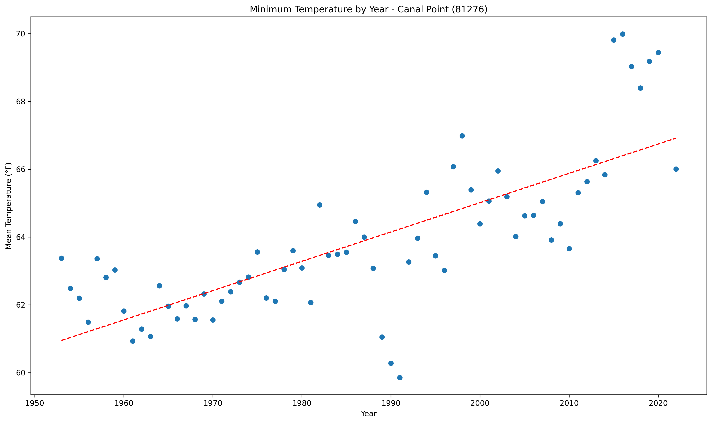

<!DOCTYPE html>
<html>
<head>
    
    <meta http-equiv="content-type" content="text/html; charset=UTF-8" />
    
        <script>
            L_NO_TOUCH = false;
            L_DISABLE_3D = false;
        </script>
    
    <style>html, body {width: 100%;height: 100%;margin: 0;padding: 0;}</style>
    <style>#map {position:absolute;top:0;bottom:0;right:0;left:0;}</style>
    <script src="https://cdn.jsdelivr.net/npm/leaflet@1.9.3/dist/leaflet.js"></script>
    <script src="https://code.jquery.com/jquery-1.12.4.min.js"></script>
    <script src="https://cdn.jsdelivr.net/npm/bootstrap@5.2.2/dist/js/bootstrap.bundle.min.js"></script>
    <script src="https://cdnjs.cloudflare.com/ajax/libs/Leaflet.awesome-markers/2.0.2/leaflet.awesome-markers.js"></script>
    <link rel="stylesheet" href="https://cdn.jsdelivr.net/npm/leaflet@1.9.3/dist/leaflet.css"/>
    <link rel="stylesheet" href="https://cdn.jsdelivr.net/npm/bootstrap@5.2.2/dist/css/bootstrap.min.css"/>
    <link rel="stylesheet" href="https://netdna.bootstrapcdn.com/bootstrap/3.0.0/css/bootstrap.min.css"/>
    <link rel="stylesheet" href="https://cdn.jsdelivr.net/npm/@fortawesome/fontawesome-free@6.2.0/css/all.min.css"/>
    <link rel="stylesheet" href="https://cdnjs.cloudflare.com/ajax/libs/Leaflet.awesome-markers/2.0.2/leaflet.awesome-markers.css"/>
    <link rel="stylesheet" href="https://cdn.jsdelivr.net/gh/python-visualization/folium/folium/templates/leaflet.awesome.rotate.min.css"/>
    
            <meta name="viewport" content="width=device-width,
                initial-scale=1.0, maximum-scale=1.0, user-scalable=no" />
            <style>
                #map_45028dfd484819cba283247d5115b8bb {
                    position: relative;
                    width: 100.0%;
                    height: 100.0%;
                    left: 0.0%;
                    top: 0.0%;
                }
                .leaflet-container { font-size: 1rem; }
            </style>
        
</head>
<body>
    
    
            <div class="folium-map" id="map_45028dfd484819cba283247d5115b8bb" ></div>
        
</body>
<script>
    
    
            var map_45028dfd484819cba283247d5115b8bb = L.map(
                "map_45028dfd484819cba283247d5115b8bb",
                {
                    center: [28.0, -82.5],
                    crs: L.CRS.EPSG3857,
                    zoom: 7,
                    zoomControl: false,
                    preferCanvas: false,
                }
            );

            

        
    
            var tile_layer_cbea0f0b43628ea20eaefbdc1e81c4ea = L.tileLayer(
                "https://cartodb-basemaps-{s}.global.ssl.fastly.net/dark_all/{z}/{x}/{y}.png",
                {"attribution": "\u0026copy; \u003ca target=\"_blank\" href=\"http://www.openstreetmap.org/copyright\"\u003eOpenStreetMap\u003c/a\u003e contributors \u0026copy; \u003ca target=\"_blank\" href=\"http://cartodb.com/attributions\"\u003eCartoDB\u003c/a\u003e, CartoDB \u003ca target=\"_blank\" href =\"http://cartodb.com/attributions\"\u003eattributions\u003c/a\u003e", "detectRetina": false, "maxNativeZoom": 18, "maxZoom": 18, "minZoom": 7, "noWrap": false, "opacity": 1, "subdomains": "abc", "tms": false}
            ).addTo(map_45028dfd484819cba283247d5115b8bb);
        
    
            var marker_4b321f58b55fb14c05b66cb52550003d = L.marker(
                [29.72, -85.03],
                {}
            ).addTo(map_45028dfd484819cba283247d5115b8bb);
        
    
            var icon_246a98235fca0550929effecdb6986a6 = L.AwesomeMarkers.icon(
                {"extraClasses": "fa-rotate-0", "icon": "info-sign", "iconColor": "white", "markerColor": "darkblue", "prefix": "glyphicon"}
            );
            marker_4b321f58b55fb14c05b66cb52550003d.setIcon(icon_246a98235fca0550929effecdb6986a6);
        
    
        var popup_766caebb2a976173f2e27421b7204765 = L.popup({"maxWidth": 1000, "minWidth": 500});

        
            
                var html_788e266a3c8edfafde1f0fea2ab25e9d = $(`<div id="html_788e266a3c8edfafde1f0fea2ab25e9d" style="width: 100.0%; height: 100.0%;"><b>Apalachicola Airport (80211)</b><br>lat: 29.72, lon: -85.03<br><a href='../../static/img/plots/trends/mintemp_yearly/80211_min_trend_yearly.png' target='_BLANK'></a></div>`)[0];
                popup_766caebb2a976173f2e27421b7204765.setContent(html_788e266a3c8edfafde1f0fea2ab25e9d);
            
        

        marker_4b321f58b55fb14c05b66cb52550003d.bindPopup(popup_766caebb2a976173f2e27421b7204765)
        ;

        
    
    
            var marker_ea8a61aef48c38ef28d43ea6f54a29f2 = L.marker(
                [27.22, -81.86],
                {}
            ).addTo(map_45028dfd484819cba283247d5115b8bb);
        
    
            var icon_fcbc8d504ac84ebda953e9dae722a174 = L.AwesomeMarkers.icon(
                {"extraClasses": "fa-rotate-0", "icon": "info-sign", "iconColor": "white", "markerColor": "blue", "prefix": "glyphicon"}
            );
            marker_ea8a61aef48c38ef28d43ea6f54a29f2.setIcon(icon_fcbc8d504ac84ebda953e9dae722a174);
        
    
        var popup_30b4f62d49ab69468e96a5f0f7246569 = L.popup({"maxWidth": 1000, "minWidth": 500});

        
            
                var html_dacedc25286adac183dbad53f033945a = $(`<div id="html_dacedc25286adac183dbad53f033945a" style="width: 100.0%; height: 100.0%;"><b>Arcadia (80228)</b><br>lat: 27.22, lon: -81.86<br><a href='../../static/img/plots/trends/mintemp_yearly/80228_min_trend_yearly.png' target='_BLANK'></a></div>`)[0];
                popup_30b4f62d49ab69468e96a5f0f7246569.setContent(html_dacedc25286adac183dbad53f033945a);
            
        

        marker_ea8a61aef48c38ef28d43ea6f54a29f2.bindPopup(popup_30b4f62d49ab69468e96a5f0f7246569)
        ;

        
    
    
            var marker_08d1b7a9594ab0695de9870fa67f7a5a = L.marker(
                [27.18, -81.35],
                {}
            ).addTo(map_45028dfd484819cba283247d5115b8bb);
        
    
            var icon_ebbceed4fad5c043af8a34bf0c864a4a = L.AwesomeMarkers.icon(
                {"extraClasses": "fa-rotate-0", "icon": "info-sign", "iconColor": "white", "markerColor": "red", "prefix": "glyphicon"}
            );
            marker_08d1b7a9594ab0695de9870fa67f7a5a.setIcon(icon_ebbceed4fad5c043af8a34bf0c864a4a);
        
    
        var popup_8f01cb37937997930afbb0b094eed710 = L.popup({"maxWidth": 1000, "minWidth": 500});

        
            
                var html_01a6e34d16ae917183b6c3749a4173b2 = $(`<div id="html_01a6e34d16ae917183b6c3749a4173b2" style="width: 100.0%; height: 100.0%;"><b>Archbold Bio Station (80236)</b><br>lat: 27.18, lon: -81.35<br><a href='../../static/img/plots/trends/mintemp_yearly/80236_min_trend_yearly.png' target='_BLANK'></a></div>`)[0];
                popup_8f01cb37937997930afbb0b094eed710.setContent(html_01a6e34d16ae917183b6c3749a4173b2);
            
        

        marker_08d1b7a9594ab0695de9870fa67f7a5a.bindPopup(popup_8f01cb37937997930afbb0b094eed710)
        ;

        
    
    
            var marker_e74fa42e319c6f671d2edc9a752256fa = L.marker(
                [27.59, -81.53],
                {}
            ).addTo(map_45028dfd484819cba283247d5115b8bb);
        
    
            var icon_ea06f7fe62b4580ccba9ca659a7ba000 = L.AwesomeMarkers.icon(
                {"extraClasses": "fa-rotate-0", "icon": "info-sign", "iconColor": "white", "markerColor": "blue", "prefix": "glyphicon"}
            );
            marker_e74fa42e319c6f671d2edc9a752256fa.setIcon(icon_ea06f7fe62b4580ccba9ca659a7ba000);
        
    
        var popup_dc16793d7b4386b0a3d8c17cf33eaf15 = L.popup({"maxWidth": 1000, "minWidth": 500});

        
            
                var html_2b33524dd10e5d969a1f41a52a831ef2 = $(`<div id="html_2b33524dd10e5d969a1f41a52a831ef2" style="width: 100.0%; height: 100.0%;"><b>Avon Park 2 W (80369)</b><br>lat: 27.59, lon: -81.53<br><a href='../../static/img/plots/trends/mintemp_yearly/80369_min_trend_yearly.png' target='_BLANK'></a></div>`)[0];
                popup_dc16793d7b4386b0a3d8c17cf33eaf15.setContent(html_2b33524dd10e5d969a1f41a52a831ef2);
            
        

        marker_e74fa42e319c6f671d2edc9a752256fa.bindPopup(popup_dc16793d7b4386b0a3d8c17cf33eaf15)
        ;

        
    
    
            var marker_d8ada48d21a58008cfe6a81a889c0eb6 = L.marker(
                [27.95, -81.79],
                {}
            ).addTo(map_45028dfd484819cba283247d5115b8bb);
        
    
            var icon_9bb9fd46b739f45ad8d098dc54077c92 = L.AwesomeMarkers.icon(
                {"extraClasses": "fa-rotate-0", "icon": "info-sign", "iconColor": "white", "markerColor": "red", "prefix": "glyphicon"}
            );
            marker_d8ada48d21a58008cfe6a81a889c0eb6.setIcon(icon_9bb9fd46b739f45ad8d098dc54077c92);
        
    
        var popup_025db2674e9d58ca949a97723326d61f = L.popup({"maxWidth": 1000, "minWidth": 500});

        
            
                var html_2815e9cdafa36d58f460587350ee64d4 = $(`<div id="html_2815e9cdafa36d58f460587350ee64d4" style="width: 100.0%; height: 100.0%;"><b>Bartow (80478)</b><br>lat: 27.95, lon: -81.79<br><a href='../../static/img/plots/trends/mintemp_yearly/80478_min_trend_yearly.png' target='_BLANK'></a></div>`)[0];
                popup_025db2674e9d58ca949a97723326d61f.setContent(html_2815e9cdafa36d58f460587350ee64d4);
            
        

        marker_d8ada48d21a58008cfe6a81a889c0eb6.bindPopup(popup_025db2674e9d58ca949a97723326d61f)
        ;

        
    
    
            var marker_e8607c220fb4c22abc67579cad313d05 = L.marker(
                [26.7, -80.66],
                {}
            ).addTo(map_45028dfd484819cba283247d5115b8bb);
        
    
            var icon_84741f15f9c3a5bd5dea67732c5ad324 = L.AwesomeMarkers.icon(
                {"extraClasses": "fa-rotate-0", "icon": "info-sign", "iconColor": "white", "markerColor": "red", "prefix": "glyphicon"}
            );
            marker_e8607c220fb4c22abc67579cad313d05.setIcon(icon_84741f15f9c3a5bd5dea67732c5ad324);
        
    
        var popup_5e7bf5625b6e6fce6059b40511a0993d = L.popup({"maxWidth": 1000, "minWidth": 500});

        
            
                var html_ddf3dfe9f5730bf2149e3d262fde3b77 = $(`<div id="html_ddf3dfe9f5730bf2149e3d262fde3b77" style="width: 100.0%; height: 100.0%;"><b>Belle Glade Airport (80611)</b><br>lat: 26.7, lon: -80.66<br><a href='../../static/img/plots/trends/mintemp_yearly/80611_min_trend_yearly.png' target='_BLANK'></a></div>`)[0];
                popup_5e7bf5625b6e6fce6059b40511a0993d.setContent(html_ddf3dfe9f5730bf2149e3d262fde3b77);
            
        

        marker_e8607c220fb4c22abc67579cad313d05.bindPopup(popup_5e7bf5625b6e6fce6059b40511a0993d)
        ;

        
    
    
            var marker_8be9922dfad6a584a01887f6a321006f = L.marker(
                [27.5, -82.57],
                {}
            ).addTo(map_45028dfd484819cba283247d5115b8bb);
        
    
            var icon_6169547f1008e20bc64b82d5bf9809fe = L.AwesomeMarkers.icon(
                {"extraClasses": "fa-rotate-0", "icon": "info-sign", "iconColor": "white", "markerColor": "red", "prefix": "glyphicon"}
            );
            marker_8be9922dfad6a584a01887f6a321006f.setIcon(icon_6169547f1008e20bc64b82d5bf9809fe);
        
    
        var popup_3206af1e6be07bf3f2eda9c3d0db6f63 = L.popup({"maxWidth": 1000, "minWidth": 500});

        
            
                var html_e0ac7433fdcee040faa356a0998872b7 = $(`<div id="html_e0ac7433fdcee040faa356a0998872b7" style="width: 100.0%; height: 100.0%;"><b>Bradenton 5 ESE (80945)</b><br>lat: 27.5, lon: -82.57<br><a href='../../static/img/plots/trends/mintemp_yearly/80945_min_trend_yearly.png' target='_BLANK'></a></div>`)[0];
                popup_3206af1e6be07bf3f2eda9c3d0db6f63.setContent(html_e0ac7433fdcee040faa356a0998872b7);
            
        

        marker_8be9922dfad6a584a01887f6a321006f.bindPopup(popup_3206af1e6be07bf3f2eda9c3d0db6f63)
        ;

        
    
    
            var marker_e8ee96ea5bf5bc8e43d20c2f5a892d0f = L.marker(
                [28.62, -82.37],
                {}
            ).addTo(map_45028dfd484819cba283247d5115b8bb);
        
    
            var icon_2a32fefcf2371255697793efb979dba7 = L.AwesomeMarkers.icon(
                {"extraClasses": "fa-rotate-0", "icon": "info-sign", "iconColor": "white", "markerColor": "orange", "prefix": "glyphicon"}
            );
            marker_e8ee96ea5bf5bc8e43d20c2f5a892d0f.setIcon(icon_2a32fefcf2371255697793efb979dba7);
        
    
        var popup_3e9b2622c35ff3329249cae09743e896 = L.popup({"maxWidth": 1000, "minWidth": 500});

        
            
                var html_2f0a041798491fd6fe3580cf1886d66f = $(`<div id="html_2f0a041798491fd6fe3580cf1886d66f" style="width: 100.0%; height: 100.0%;"><b>Chinsegut Hill (81046)</b><br>lat: 28.62, lon: -82.37<br><a href='../../static/img/plots/trends/mintemp_yearly/81046_min_trend_yearly.png' target='_BLANK'></a></div>`)[0];
                popup_3e9b2622c35ff3329249cae09743e896.setContent(html_2f0a041798491fd6fe3580cf1886d66f);
            
        

        marker_e8ee96ea5bf5bc8e43d20c2f5a892d0f.bindPopup(popup_3e9b2622c35ff3329249cae09743e896)
        ;

        
    
    
            var marker_c5ace070caba652eba973af1f15fb053 = L.marker(
                [28.66, -82.11],
                {}
            ).addTo(map_45028dfd484819cba283247d5115b8bb);
        
    
            var icon_a1db530ecbc5580bcc1d7c54768d6bc8 = L.AwesomeMarkers.icon(
                {"extraClasses": "fa-rotate-0", "icon": "info-sign", "iconColor": "white", "markerColor": "red", "prefix": "glyphicon"}
            );
            marker_c5ace070caba652eba973af1f15fb053.setIcon(icon_a1db530ecbc5580bcc1d7c54768d6bc8);
        
    
        var popup_9878ec47477b284de61fb4461b7c73a8 = L.popup({"maxWidth": 1000, "minWidth": 500});

        
            
                var html_7cd9458a5c3ac8addd1b31ecbfeea1bb = $(`<div id="html_7cd9458a5c3ac8addd1b31ecbfeea1bb" style="width: 100.0%; height: 100.0%;"><b>Bushnell 1 E (81163)</b><br>lat: 28.66, lon: -82.11<br><a href='../../static/img/plots/trends/mintemp_yearly/81163_min_trend_yearly.png' target='_BLANK'></a></div>`)[0];
                popup_9878ec47477b284de61fb4461b7c73a8.setContent(html_7cd9458a5c3ac8addd1b31ecbfeea1bb);
            
        

        marker_c5ace070caba652eba973af1f15fb053.bindPopup(popup_9878ec47477b284de61fb4461b7c73a8)
        ;

        
    
    
            var marker_dbb73b05898734e0657ed728738a178c = L.marker(
                [26.86, -80.63],
                {}
            ).addTo(map_45028dfd484819cba283247d5115b8bb);
        
    
            var icon_fe1996f56ac8d8b0f3c0eef2a165b04c = L.AwesomeMarkers.icon(
                {"extraClasses": "fa-rotate-0", "icon": "info-sign", "iconColor": "white", "markerColor": "red", "prefix": "glyphicon"}
            );
            marker_dbb73b05898734e0657ed728738a178c.setIcon(icon_fe1996f56ac8d8b0f3c0eef2a165b04c);
        
    
        var popup_34d78b88e53d9b3a531a709c68162996 = L.popup({"maxWidth": 1000, "minWidth": 500});

        
            
                var html_513a45b335a47e44858232ae7831c212 = $(`<div id="html_513a45b335a47e44858232ae7831c212" style="width: 100.0%; height: 100.0%;"><b>Canal Point (81276)</b><br>lat: 26.86, lon: -80.63<br><a href='../../static/img/plots/trends/mintemp_yearly/81276_min_trend_yearly.png' target='_BLANK'></a></div>`)[0];
                popup_34d78b88e53d9b3a531a709c68162996.setContent(html_513a45b335a47e44858232ae7831c212);
            
        

        marker_dbb73b05898734e0657ed728738a178c.bindPopup(popup_34d78b88e53d9b3a531a709c68162996)
        ;

        
    
    
            var marker_70b3be1f88fcf18dca84cf43c19db01f = L.marker(
                [30.78, -85.54],
                {}
            ).addTo(map_45028dfd484819cba283247d5115b8bb);
        
    
            var icon_7edb69a520017511342a5e6cb0ba6381 = L.AwesomeMarkers.icon(
                {"extraClasses": "fa-rotate-0", "icon": "info-sign", "iconColor": "white", "markerColor": "orange", "prefix": "glyphicon"}
            );
            marker_70b3be1f88fcf18dca84cf43c19db01f.setIcon(icon_7edb69a520017511342a5e6cb0ba6381);
        
    
        var popup_5daa9f2781411e1b7c9ca4b0757ecfaa = L.popup({"maxWidth": 1000, "minWidth": 500});

        
            
                var html_8b69c25bd636d314269cb9d872b9c2c8 = $(`<div id="html_8b69c25bd636d314269cb9d872b9c2c8" style="width: 100.0%; height: 100.0%;"><b>Chipley (81544)</b><br>lat: 30.78, lon: -85.54<br><a href='../../static/img/plots/trends/mintemp_yearly/81544_min_trend_yearly.png' target='_BLANK'></a></div>`)[0];
                popup_5daa9f2781411e1b7c9ca4b0757ecfaa.setContent(html_8b69c25bd636d314269cb9d872b9c2c8);
            
        

        marker_70b3be1f88fcf18dca84cf43c19db01f.bindPopup(popup_5daa9f2781411e1b7c9ca4b0757ecfaa)
        ;

        
    
    
            var marker_2447c78da926db3b8b69672fcc23fa2c = L.marker(
                [28.56, -81.77],
                {}
            ).addTo(map_45028dfd484819cba283247d5115b8bb);
        
    
            var icon_ec7db2fba7eb6cb741f3f868a3679c56 = L.AwesomeMarkers.icon(
                {"extraClasses": "fa-rotate-0", "icon": "info-sign", "iconColor": "white", "markerColor": "red", "prefix": "glyphicon"}
            );
            marker_2447c78da926db3b8b69672fcc23fa2c.setIcon(icon_ec7db2fba7eb6cb741f3f868a3679c56);
        
    
        var popup_a01196f90b747ff583f6c747d89952bb = L.popup({"maxWidth": 1000, "minWidth": 500});

        
            
                var html_71712c33dd099c0f6834296f5a29aec3 = $(`<div id="html_71712c33dd099c0f6834296f5a29aec3" style="width: 100.0%; height: 100.0%;"><b>Clermont 9 S (81641)</b><br>lat: 28.56, lon: -81.77<br><a href='../../static/img/plots/trends/mintemp_yearly/81641_min_trend_yearly.png' target='_BLANK'></a></div>`)[0];
                popup_a01196f90b747ff583f6c747d89952bb.setContent(html_71712c33dd099c0f6834296f5a29aec3);
            
        

        marker_2447c78da926db3b8b69672fcc23fa2c.bindPopup(popup_a01196f90b747ff583f6c747d89952bb)
        ;

        
    
    
            var marker_2fd699295d79e3d1de51b9ca9a0639e3 = L.marker(
                [29.43, -81.51],
                {}
            ).addTo(map_45028dfd484819cba283247d5115b8bb);
        
    
            var icon_66441ac72b35b1b10f5212364ec4254b = L.AwesomeMarkers.icon(
                {"extraClasses": "fa-rotate-0", "icon": "info-sign", "iconColor": "white", "markerColor": "orange", "prefix": "glyphicon"}
            );
            marker_2fd699295d79e3d1de51b9ca9a0639e3.setIcon(icon_66441ac72b35b1b10f5212364ec4254b);
        
    
        var popup_59825b311f6af4481d0c5c321a393cb1 = L.popup({"maxWidth": 1000, "minWidth": 500});

        
            
                var html_5d82ba9fe3c3f02cbf8438efa31291b0 = $(`<div id="html_5d82ba9fe3c3f02cbf8438efa31291b0" style="width: 100.0%; height: 100.0%;"><b>Crescent City (81978)</b><br>lat: 29.43, lon: -81.51<br><a href='../../static/img/plots/trends/mintemp_yearly/81978_min_trend_yearly.png' target='_BLANK'></a></div>`)[0];
                popup_59825b311f6af4481d0c5c321a393cb1.setContent(html_5d82ba9fe3c3f02cbf8438efa31291b0);
            
        

        marker_2fd699295d79e3d1de51b9ca9a0639e3.bindPopup(popup_59825b311f6af4481d0c5c321a393cb1)
        ;

        
    
    
            var marker_c23503296f4385399eecdc7dad6229e0 = L.marker(
                [30.78, -86.52],
                {}
            ).addTo(map_45028dfd484819cba283247d5115b8bb);
        
    
            var icon_0737c2081d9b68b739aa9e644a9b6759 = L.AwesomeMarkers.icon(
                {"extraClasses": "fa-rotate-0", "icon": "info-sign", "iconColor": "white", "markerColor": "blue", "prefix": "glyphicon"}
            );
            marker_c23503296f4385399eecdc7dad6229e0.setIcon(icon_0737c2081d9b68b739aa9e644a9b6759);
        
    
        var popup_3523ef3749ae2af1e63538924d637e76 = L.popup({"maxWidth": 1000, "minWidth": 500});

        
            
                var html_92ed54a5001d9aa3e9aaf92ff9e94c33 = $(`<div id="html_92ed54a5001d9aa3e9aaf92ff9e94c33" style="width: 100.0%; height: 100.0%;"><b>Crestview Bob Sikes Airport (81986)</b><br>lat: 30.78, lon: -86.52<br><a href='../../static/img/plots/trends/mintemp_yearly/81986_min_trend_yearly.png' target='_BLANK'></a></div>`)[0];
                popup_3523ef3749ae2af1e63538924d637e76.setContent(html_92ed54a5001d9aa3e9aaf92ff9e94c33);
            
        

        marker_c23503296f4385399eecdc7dad6229e0.bindPopup(popup_3523ef3749ae2af1e63538924d637e76)
        ;

        
    
    
            var marker_dc3432f801442a51670a45234b1ee0d1 = L.marker(
                [29.63, -83.13],
                {}
            ).addTo(map_45028dfd484819cba283247d5115b8bb);
        
    
            var icon_f2e8a548041b121239a63c34e3e0fc7f = L.AwesomeMarkers.icon(
                {"extraClasses": "fa-rotate-0", "icon": "info-sign", "iconColor": "white", "markerColor": "red", "prefix": "glyphicon"}
            );
            marker_dc3432f801442a51670a45234b1ee0d1.setIcon(icon_f2e8a548041b121239a63c34e3e0fc7f);
        
    
        var popup_cc5ed3834775bdcf80a91180f21b41c1 = L.popup({"maxWidth": 1000, "minWidth": 500});

        
            
                var html_2d8f4940e625033435d159776a476e6f = $(`<div id="html_2d8f4940e625033435d159776a476e6f" style="width: 100.0%; height: 100.0%;"><b>Cross City 1 E (82008)</b><br>lat: 29.63, lon: -83.13<br><a href='../../static/img/plots/trends/mintemp_yearly/82008_min_trend_yearly.png' target='_BLANK'></a></div>`)[0];
                popup_cc5ed3834775bdcf80a91180f21b41c1.setContent(html_2d8f4940e625033435d159776a476e6f);
            
        

        marker_dc3432f801442a51670a45234b1ee0d1.bindPopup(popup_cc5ed3834775bdcf80a91180f21b41c1)
        ;

        
    
    
            var marker_76cdd63297120916c3a2782be42fb02f = L.marker(
                [29.16, -81.0],
                {}
            ).addTo(map_45028dfd484819cba283247d5115b8bb);
        
    
            var icon_4f4f56a16894f9d01199ac42adacff03 = L.AwesomeMarkers.icon(
                {"extraClasses": "fa-rotate-0", "icon": "info-sign", "iconColor": "white", "markerColor": "orange", "prefix": "glyphicon"}
            );
            marker_76cdd63297120916c3a2782be42fb02f.setIcon(icon_4f4f56a16894f9d01199ac42adacff03);
        
    
        var popup_b17fe1b3843c7557263b7d0b9f37ba87 = L.popup({"maxWidth": 1000, "minWidth": 500});

        
            
                var html_7e70004dc1e3af4e5e14aee467f05724 = $(`<div id="html_7e70004dc1e3af4e5e14aee467f05724" style="width: 100.0%; height: 100.0%;"><b>Daytona Beach (82150)</b><br>lat: 29.16, lon: -81<br><a href='../../static/img/plots/trends/mintemp_yearly/82150_min_trend_yearly.png' target='_BLANK'></a></div>`)[0];
                popup_b17fe1b3843c7557263b7d0b9f37ba87.setContent(html_7e70004dc1e3af4e5e14aee467f05724);
            
        

        marker_76cdd63297120916c3a2782be42fb02f.bindPopup(popup_b17fe1b3843c7557263b7d0b9f37ba87)
        ;

        
    
    
            var marker_df07cf7a7ebba6fd4446c9a3b688d1ea = L.marker(
                [29.18, -81.06],
                {}
            ).addTo(map_45028dfd484819cba283247d5115b8bb);
        
    
            var icon_150fb742f5bb33d44876d790307444fe = L.AwesomeMarkers.icon(
                {"extraClasses": "fa-rotate-0", "icon": "info-sign", "iconColor": "white", "markerColor": "red", "prefix": "glyphicon"}
            );
            marker_df07cf7a7ebba6fd4446c9a3b688d1ea.setIcon(icon_150fb742f5bb33d44876d790307444fe);
        
    
        var popup_8fe49af48eebecfd31c79b0c55b57003 = L.popup({"maxWidth": 1000, "minWidth": 500});

        
            
                var html_22f2f9407b900ea78a9886a0eb478049 = $(`<div id="html_22f2f9407b900ea78a9886a0eb478049" style="width: 100.0%; height: 100.0%;"><b>Daytona Beach Intl Airport (82158)</b><br>lat: 29.18, lon: -81.06<br><a href='../../static/img/plots/trends/mintemp_yearly/82158_min_trend_yearly.png' target='_BLANK'></a></div>`)[0];
                popup_8fe49af48eebecfd31c79b0c55b57003.setContent(html_22f2f9407b900ea78a9886a0eb478049);
            
        

        marker_df07cf7a7ebba6fd4446c9a3b688d1ea.bindPopup(popup_8fe49af48eebecfd31c79b0c55b57003)
        ;

        
    
    
            var marker_5858391bc6ebb8ac5d14661aaae96f0b = L.marker(
                [30.72, -86.12],
                {}
            ).addTo(map_45028dfd484819cba283247d5115b8bb);
        
    
            var icon_bc3e2d5beeedaf9c9125aad66acd519d = L.AwesomeMarkers.icon(
                {"extraClasses": "fa-rotate-0", "icon": "info-sign", "iconColor": "white", "markerColor": "blue", "prefix": "glyphicon"}
            );
            marker_5858391bc6ebb8ac5d14661aaae96f0b.setIcon(icon_bc3e2d5beeedaf9c9125aad66acd519d);
        
    
        var popup_3535e1f03c599c3d76a885f33770043b = L.popup({"maxWidth": 1000, "minWidth": 500});

        
            
                var html_08d7e53956824456162c53f93aad5bd4 = $(`<div id="html_08d7e53956824456162c53f93aad5bd4" style="width: 100.0%; height: 100.0%;"><b>De Funiak Springs 1 E (82220)</b><br>lat: 30.72, lon: -86.12<br><a href='../../static/img/plots/trends/mintemp_yearly/82220_min_trend_yearly.png' target='_BLANK'></a></div>`)[0];
                popup_3535e1f03c599c3d76a885f33770043b.setContent(html_08d7e53956824456162c53f93aad5bd4);
            
        

        marker_5858391bc6ebb8ac5d14661aaae96f0b.bindPopup(popup_3535e1f03c599c3d76a885f33770043b)
        ;

        
    
    
            var marker_773bf43f6e421ac295224ad5e620f580 = L.marker(
                [29.03, -81.3],
                {}
            ).addTo(map_45028dfd484819cba283247d5115b8bb);
        
    
            var icon_a2d359817ba00ad2a8f3cf728a928a86 = L.AwesomeMarkers.icon(
                {"extraClasses": "fa-rotate-0", "icon": "info-sign", "iconColor": "white", "markerColor": "orange", "prefix": "glyphicon"}
            );
            marker_773bf43f6e421ac295224ad5e620f580.setIcon(icon_a2d359817ba00ad2a8f3cf728a928a86);
        
    
        var popup_c94189a87c37717a03a920cda19d817c = L.popup({"maxWidth": 1000, "minWidth": 500});

        
            
                var html_c9a8a79cc6ce55633c8ad0fc5122df64 = $(`<div id="html_c9a8a79cc6ce55633c8ad0fc5122df64" style="width: 100.0%; height: 100.0%;"><b>Deland 1 SSE (82229)</b><br>lat: 29.03, lon: -81.3<br><a href='../../static/img/plots/trends/mintemp_yearly/82229_min_trend_yearly.png' target='_BLANK'></a></div>`)[0];
                popup_c94189a87c37717a03a920cda19d817c.setContent(html_c9a8a79cc6ce55633c8ad0fc5122df64);
            
        

        marker_773bf43f6e421ac295224ad5e620f580.bindPopup(popup_c94189a87c37717a03a920cda19d817c)
        ;

        
    
    
            var marker_67b4dab6c628f3ad045cb2c3b30de3b2 = L.marker(
                [30.71, -85.72],
                {}
            ).addTo(map_45028dfd484819cba283247d5115b8bb);
        
    
            var icon_4b833272d6e4bac3b5849457c7416dd1 = L.AwesomeMarkers.icon(
                {"extraClasses": "fa-rotate-0", "icon": "info-sign", "iconColor": "white", "markerColor": "red", "prefix": "glyphicon"}
            );
            marker_67b4dab6c628f3ad045cb2c3b30de3b2.setIcon(icon_4b833272d6e4bac3b5849457c7416dd1);
        
    
        var popup_015c51624043c1fec3be910497908e8c = L.popup({"maxWidth": 1000, "minWidth": 500});

        
            
                var html_b5f52a90a68b3c2baf556dfeb28acf08 = $(`<div id="html_b5f52a90a68b3c2baf556dfeb28acf08" style="width: 100.0%; height: 100.0%;"><b>Devils Garden (82298)</b><br>lat: 30.71, lon: -85.72<br><a href='../../static/img/plots/trends/mintemp_yearly/82298_min_trend_yearly.png' target='_BLANK'></a></div>`)[0];
                popup_015c51624043c1fec3be910497908e8c.setContent(html_b5f52a90a68b3c2baf556dfeb28acf08);
            
        

        marker_67b4dab6c628f3ad045cb2c3b30de3b2.bindPopup(popup_015c51624043c1fec3be910497908e8c)
        ;

        
    
    
            var marker_075649d6b6e451ca734564f93fab13c2 = L.marker(
                [25.29, -80.89],
                {}
            ).addTo(map_45028dfd484819cba283247d5115b8bb);
        
    
            var icon_aa098c2070e1bddb46bf708fa379ed31 = L.AwesomeMarkers.icon(
                {"extraClasses": "fa-rotate-0", "icon": "info-sign", "iconColor": "white", "markerColor": "orange", "prefix": "glyphicon"}
            );
            marker_075649d6b6e451ca734564f93fab13c2.setIcon(icon_aa098c2070e1bddb46bf708fa379ed31);
        
    
        var popup_3154a7b56374668e924cea7dcce3cfa4 = L.popup({"maxWidth": 1000, "minWidth": 500});

        
            
                var html_3d76be89589ea102318eaa8d642281c7 = $(`<div id="html_3d76be89589ea102318eaa8d642281c7" style="width: 100.0%; height: 100.0%;"><b>Everglades (82850)</b><br>lat: 25.29, lon: -80.89<br><a href='../../static/img/plots/trends/mintemp_yearly/82850_min_trend_yearly.png' target='_BLANK'></a></div>`)[0];
                popup_3154a7b56374668e924cea7dcce3cfa4.setContent(html_3d76be89589ea102318eaa8d642281c7);
            
        

        marker_075649d6b6e451ca734564f93fab13c2.bindPopup(popup_3154a7b56374668e924cea7dcce3cfa4)
        ;

        
    
    
            var marker_f562542020c4878e738ebc665be683a1 = L.marker(
                [29.75, -81.54],
                {}
            ).addTo(map_45028dfd484819cba283247d5115b8bb);
        
    
            var icon_a690dd4bcd5a9070d9204188ea6c2695 = L.AwesomeMarkers.icon(
                {"extraClasses": "fa-rotate-0", "icon": "info-sign", "iconColor": "white", "markerColor": "orange", "prefix": "glyphicon"}
            );
            marker_f562542020c4878e738ebc665be683a1.setIcon(icon_a690dd4bcd5a9070d9204188ea6c2695);
        
    
        var popup_104fc650116888d651fc7ef69d2c9b63 = L.popup({"maxWidth": 1000, "minWidth": 500});

        
            
                var html_109ef33c612a9d786edea5367ae31ac7 = $(`<div id="html_109ef33c612a9d786edea5367ae31ac7" style="width: 100.0%; height: 100.0%;"><b>Federal Point (82915)</b><br>lat: 29.75, lon: -81.54<br><a href='../../static/img/plots/trends/mintemp_yearly/82915_min_trend_yearly.png' target='_BLANK'></a></div>`)[0];
                popup_104fc650116888d651fc7ef69d2c9b63.setContent(html_109ef33c612a9d786edea5367ae31ac7);
            
        

        marker_f562542020c4878e738ebc665be683a1.bindPopup(popup_104fc650116888d651fc7ef69d2c9b63)
        ;

        
    
    
            var marker_ec64ef78ff094a8c8be5ba3ada633221 = L.marker(
                [30.62, -81.46],
                {}
            ).addTo(map_45028dfd484819cba283247d5115b8bb);
        
    
            var icon_4534673b622235e9c54d2e0c467e5f59 = L.AwesomeMarkers.icon(
                {"extraClasses": "fa-rotate-0", "icon": "info-sign", "iconColor": "white", "markerColor": "blue", "prefix": "glyphicon"}
            );
            marker_ec64ef78ff094a8c8be5ba3ada633221.setIcon(icon_4534673b622235e9c54d2e0c467e5f59);
        
    
        var popup_b2975d35203d0f043c85e53c713cd7c7 = L.popup({"maxWidth": 1000, "minWidth": 500});

        
            
                var html_4ec640cecff6a0f73c703eabaaf3ca0a = $(`<div id="html_4ec640cecff6a0f73c703eabaaf3ca0a" style="width: 100.0%; height: 100.0%;"><b>Fernandina Beach (82944)</b><br>lat: 30.62, lon: -81.46<br><a href='../../static/img/plots/trends/mintemp_yearly/82944_min_trend_yearly.png' target='_BLANK'></a></div>`)[0];
                popup_b2975d35203d0f043c85e53c713cd7c7.setContent(html_4ec640cecff6a0f73c703eabaaf3ca0a);
            
        

        marker_ec64ef78ff094a8c8be5ba3ada633221.bindPopup(popup_b2975d35203d0f043c85e53c713cd7c7)
        ;

        
    
    
            var marker_b4f92e03759e08b69d097d484672d344 = L.marker(
                [25.14, -80.93],
                {}
            ).addTo(map_45028dfd484819cba283247d5115b8bb);
        
    
            var icon_6695ae3ea8cd0e68942ee434237ab07f = L.AwesomeMarkers.icon(
                {"extraClasses": "fa-rotate-0", "icon": "info-sign", "iconColor": "white", "markerColor": "red", "prefix": "glyphicon"}
            );
            marker_b4f92e03759e08b69d097d484672d344.setIcon(icon_6695ae3ea8cd0e68942ee434237ab07f);
        
    
        var popup_328a14ac9049aaba9ad0cacc60a266ba = L.popup({"maxWidth": 1000, "minWidth": 500});

        
            
                var html_c9efbc3346c06a8fb3c269842c47abae = $(`<div id="html_c9efbc3346c06a8fb3c269842c47abae" style="width: 100.0%; height: 100.0%;"><b>Flamingo Ranger Station (83020)</b><br>lat: 25.14, lon: -80.93<br><a href='../../static/img/plots/trends/mintemp_yearly/83020_min_trend_yearly.png' target='_BLANK'></a></div>`)[0];
                popup_328a14ac9049aaba9ad0cacc60a266ba.setContent(html_c9efbc3346c06a8fb3c269842c47abae);
            
        

        marker_b4f92e03759e08b69d097d484672d344.bindPopup(popup_328a14ac9049aaba9ad0cacc60a266ba)
        ;

        
    
    
            var marker_daf0e0069916761b26646d1999aff6fb = L.marker(
                [27.53, -80.81],
                {}
            ).addTo(map_45028dfd484819cba283247d5115b8bb);
        
    
            var icon_96c15398560b464f0bde98e519ae20ff = L.AwesomeMarkers.icon(
                {"extraClasses": "fa-rotate-0", "icon": "info-sign", "iconColor": "white", "markerColor": "red", "prefix": "glyphicon"}
            );
            marker_daf0e0069916761b26646d1999aff6fb.setIcon(icon_96c15398560b464f0bde98e519ae20ff);
        
    
        var popup_4085c950e5c3a7f32d2126a0665087d9 = L.popup({"maxWidth": 1000, "minWidth": 500});

        
            
                var html_8c9d228f7c6bc514a5fbd52b8465786d = $(`<div id="html_8c9d228f7c6bc514a5fbd52b8465786d" style="width: 100.0%; height: 100.0%;"><b>Fort Drum (83137)</b><br>lat: 27.53, lon: -80.81<br><a href='../../static/img/plots/trends/mintemp_yearly/83137_min_trend_yearly.png' target='_BLANK'></a></div>`)[0];
                popup_4085c950e5c3a7f32d2126a0665087d9.setContent(html_8c9d228f7c6bc514a5fbd52b8465786d);
            
        

        marker_daf0e0069916761b26646d1999aff6fb.bindPopup(popup_4085c950e5c3a7f32d2126a0665087d9)
        ;

        
    
    
            var marker_73f31507812a52737a0237d348412075 = L.marker(
                [27.61, -81.94],
                {}
            ).addTo(map_45028dfd484819cba283247d5115b8bb);
        
    
            var icon_6a6a484ac5d455ad08c49f5284f6a3a1 = L.AwesomeMarkers.icon(
                {"extraClasses": "fa-rotate-0", "icon": "info-sign", "iconColor": "white", "markerColor": "red", "prefix": "glyphicon"}
            );
            marker_73f31507812a52737a0237d348412075.setIcon(icon_6a6a484ac5d455ad08c49f5284f6a3a1);
        
    
        var popup_4b5478afabe4c61a70198951a74fa867 = L.popup({"maxWidth": 1000, "minWidth": 500});

        
            
                var html_575ffef0e91fd748486cc03ce1810648 = $(`<div id="html_575ffef0e91fd748486cc03ce1810648" style="width: 100.0%; height: 100.0%;"><b>Fort Green 12 WSW (83153)</b><br>lat: 27.61, lon: -81.94<br><a href='../../static/img/plots/trends/mintemp_yearly/83153_min_trend_yearly.png' target='_BLANK'></a></div>`)[0];
                popup_4b5478afabe4c61a70198951a74fa867.setContent(html_575ffef0e91fd748486cc03ce1810648);
            
        

        marker_73f31507812a52737a0237d348412075.bindPopup(popup_4b5478afabe4c61a70198951a74fa867)
        ;

        
    
    
            var marker_80445881afb356e040d7bc379aae51e9 = L.marker(
                [26.07, -80.15],
                {}
            ).addTo(map_45028dfd484819cba283247d5115b8bb);
        
    
            var icon_6c443c6b94d10f3d49431951895d4dd1 = L.AwesomeMarkers.icon(
                {"extraClasses": "fa-rotate-0", "icon": "info-sign", "iconColor": "white", "markerColor": "red", "prefix": "glyphicon"}
            );
            marker_80445881afb356e040d7bc379aae51e9.setIcon(icon_6c443c6b94d10f3d49431951895d4dd1);
        
    
        var popup_2b953a21f595aa554ffdd93926c0b5b8 = L.popup({"maxWidth": 1000, "minWidth": 500});

        
            
                var html_15ddc4081fd10338555fdb23a7f7ca3e = $(`<div id="html_15ddc4081fd10338555fdb23a7f7ca3e" style="width: 100.0%; height: 100.0%;"><b>Ft Lauderdale (83163)</b><br>lat: 26.07, lon: -80.15<br><a href='../../static/img/plots/trends/mintemp_yearly/83163_min_trend_yearly.png' target='_BLANK'></a></div>`)[0];
                popup_2b953a21f595aa554ffdd93926c0b5b8.setContent(html_15ddc4081fd10338555fdb23a7f7ca3e);
            
        

        marker_80445881afb356e040d7bc379aae51e9.bindPopup(popup_2b953a21f595aa554ffdd93926c0b5b8)
        ;

        
    
    
            var marker_f4dec99d76ba245cad08fd236549ba9f = L.marker(
                [26.13, -80.11],
                {}
            ).addTo(map_45028dfd484819cba283247d5115b8bb);
        
    
            var icon_96fae906f062769b80f751f9a8377cb9 = L.AwesomeMarkers.icon(
                {"extraClasses": "fa-rotate-0", "icon": "info-sign", "iconColor": "white", "markerColor": "orange", "prefix": "glyphicon"}
            );
            marker_f4dec99d76ba245cad08fd236549ba9f.setIcon(icon_96fae906f062769b80f751f9a8377cb9);
        
    
        var popup_aab19b53a992bb33ea74c8c317987720 = L.popup({"maxWidth": 1000, "minWidth": 500});

        
            
                var html_f4fde5063a42e3e7f3f287e4adb49036 = $(`<div id="html_f4fde5063a42e3e7f3f287e4adb49036" style="width: 100.0%; height: 100.0%;"><b>Ft Lauderdale Beach (83168)</b><br>lat: 26.13, lon: -80.11<br><a href='../../static/img/plots/trends/mintemp_yearly/83168_min_trend_yearly.png' target='_BLANK'></a></div>`)[0];
                popup_aab19b53a992bb33ea74c8c317987720.setContent(html_f4fde5063a42e3e7f3f287e4adb49036);
            
        

        marker_f4dec99d76ba245cad08fd236549ba9f.bindPopup(popup_aab19b53a992bb33ea74c8c317987720)
        ;

        
    
    
            var marker_bdae882ebaa7ef52d904c73850ce5c4f = L.marker(
                [26.59, -81.87],
                {}
            ).addTo(map_45028dfd484819cba283247d5115b8bb);
        
    
            var icon_d74ea3e26f2b8ce90497b4fe472a7c0a = L.AwesomeMarkers.icon(
                {"extraClasses": "fa-rotate-0", "icon": "info-sign", "iconColor": "white", "markerColor": "red", "prefix": "glyphicon"}
            );
            marker_bdae882ebaa7ef52d904c73850ce5c4f.setIcon(icon_d74ea3e26f2b8ce90497b4fe472a7c0a);
        
    
        var popup_823ff77d7e85ec7fb52d592a7a446f51 = L.popup({"maxWidth": 1000, "minWidth": 500});

        
            
                var html_e3b834d7ce632dc4a4556a4911e94ce7 = $(`<div id="html_e3b834d7ce632dc4a4556a4911e94ce7" style="width: 100.0%; height: 100.0%;"><b>Fort Myers Page Field Airport (83186)</b><br>lat: 26.59, lon: -81.87<br><a href='../../static/img/plots/trends/mintemp_yearly/83186_min_trend_yearly.png' target='_BLANK'></a></div>`)[0];
                popup_823ff77d7e85ec7fb52d592a7a446f51.setContent(html_e3b834d7ce632dc4a4556a4911e94ce7);
            
        

        marker_bdae882ebaa7ef52d904c73850ce5c4f.bindPopup(popup_823ff77d7e85ec7fb52d592a7a446f51)
        ;

        
    
    
            var marker_1f669c673dfddb489e1b77e818b783e9 = L.marker(
                [27.44, -80.34],
                {}
            ).addTo(map_45028dfd484819cba283247d5115b8bb);
        
    
            var icon_f94259a3a796c84298365bad3d52d1cb = L.AwesomeMarkers.icon(
                {"extraClasses": "fa-rotate-0", "icon": "info-sign", "iconColor": "white", "markerColor": "blue", "prefix": "glyphicon"}
            );
            marker_1f669c673dfddb489e1b77e818b783e9.setIcon(icon_f94259a3a796c84298365bad3d52d1cb);
        
    
        var popup_ef6591fd184f73e9edf182094b72e023 = L.popup({"maxWidth": 1000, "minWidth": 500});

        
            
                var html_2f8ff93a27881eacc9bab31af3a85228 = $(`<div id="html_2f8ff93a27881eacc9bab31af3a85228" style="width: 100.0%; height: 100.0%;"><b>Fort Pierce (83207)</b><br>lat: 27.44, lon: -80.34<br><a href='../../static/img/plots/trends/mintemp_yearly/83207_min_trend_yearly.png' target='_BLANK'></a></div>`)[0];
                popup_ef6591fd184f73e9edf182094b72e023.setContent(html_2f8ff93a27881eacc9bab31af3a85228);
            
        

        marker_1f669c673dfddb489e1b77e818b783e9.bindPopup(popup_ef6591fd184f73e9edf182094b72e023)
        ;

        
    
    
            var marker_57c640a332a2f88a19e1c78c5269c7b6 = L.marker(
                [29.69, -82.28],
                {}
            ).addTo(map_45028dfd484819cba283247d5115b8bb);
        
    
            var icon_09001f66c342c293807a3a939aec1da7 = L.AwesomeMarkers.icon(
                {"extraClasses": "fa-rotate-0", "icon": "info-sign", "iconColor": "white", "markerColor": "red", "prefix": "glyphicon"}
            );
            marker_57c640a332a2f88a19e1c78c5269c7b6.setIcon(icon_09001f66c342c293807a3a939aec1da7);
        
    
        var popup_3a455d4f623743bb1263d2209bfb11f9 = L.popup({"maxWidth": 1000, "minWidth": 500});

        
            
                var html_e875d9ec940543269b36b6de42b044b4 = $(`<div id="html_e875d9ec940543269b36b6de42b044b4" style="width: 100.0%; height: 100.0%;"><b>Gainesville Regional Airport (83326)</b><br>lat: 29.69, lon: -82.28<br><a href='../../static/img/plots/trends/mintemp_yearly/83326_min_trend_yearly.png' target='_BLANK'></a></div>`)[0];
                popup_3a455d4f623743bb1263d2209bfb11f9.setContent(html_e875d9ec940543269b36b6de42b044b4);
            
        

        marker_57c640a332a2f88a19e1c78c5269c7b6.bindPopup(popup_3a455d4f623743bb1263d2209bfb11f9)
        ;

        
    
    
            var marker_066fc690fb8be5da4af3713fc57a2e57 = L.marker(
                [30.28, -82.16],
                {}
            ).addTo(map_45028dfd484819cba283247d5115b8bb);
        
    
            var icon_299a2fc10404930afff7bae6be3dd78a = L.AwesomeMarkers.icon(
                {"extraClasses": "fa-rotate-0", "icon": "info-sign", "iconColor": "white", "markerColor": "blue", "prefix": "glyphicon"}
            );
            marker_066fc690fb8be5da4af3713fc57a2e57.setIcon(icon_299a2fc10404930afff7bae6be3dd78a);
        
    
        var popup_ce1c6096a2e74ebdc2e3c1092693fc6c = L.popup({"maxWidth": 1000, "minWidth": 500});

        
            
                var html_1bf715ae9115a3ad3d3b60230ead0412 = $(`<div id="html_1bf715ae9115a3ad3d3b60230ead0412" style="width: 100.0%; height: 100.0%;"><b>Glen St Mary 1 W (83470)</b><br>lat: 30.28, lon: -82.16<br><a href='../../static/img/plots/trends/mintemp_yearly/83470_min_trend_yearly.png' target='_BLANK'></a></div>`)[0];
                popup_ce1c6096a2e74ebdc2e3c1092693fc6c.setContent(html_1bf715ae9115a3ad3d3b60230ead0412);
            
        

        marker_066fc690fb8be5da4af3713fc57a2e57.bindPopup(popup_ce1c6096a2e74ebdc2e3c1092693fc6c)
        ;

        
    
    
            var marker_49bcaca4d4f5e88533dc3cf328fdc465 = L.marker(
                [29.72, -81.51],
                {}
            ).addTo(map_45028dfd484819cba283247d5115b8bb);
        
    
            var icon_560171de90a348b0cd813faca2286a3a = L.AwesomeMarkers.icon(
                {"extraClasses": "fa-rotate-0", "icon": "info-sign", "iconColor": "white", "markerColor": "red", "prefix": "glyphicon"}
            );
            marker_49bcaca4d4f5e88533dc3cf328fdc465.setIcon(icon_560171de90a348b0cd813faca2286a3a);
        
    
        var popup_48c19c5a3615a5851cd03c16c44243de = L.popup({"maxWidth": 1000, "minWidth": 500});

        
            
                var html_eeae915a0dae923594941392a4ac3df9 = $(`<div id="html_eeae915a0dae923594941392a4ac3df9" style="width: 100.0%; height: 100.0%;"><b>Hastings 4 NE (83874)</b><br>lat: 29.72, lon: -81.51<br><a href='../../static/img/plots/trends/mintemp_yearly/83874_min_trend_yearly.png' target='_BLANK'></a></div>`)[0];
                popup_48c19c5a3615a5851cd03c16c44243de.setContent(html_eeae915a0dae923594941392a4ac3df9);
            
        

        marker_49bcaca4d4f5e88533dc3cf328fdc465.bindPopup(popup_48c19c5a3615a5851cd03c16c44243de)
        ;

        
    
    
            var marker_7abdf3a2005a4bf88467814f2202ae1f = L.marker(
                [25.86, -80.28],
                {}
            ).addTo(map_45028dfd484819cba283247d5115b8bb);
        
    
            var icon_acac9fee6f9fa82192ecc62a93e77c4f = L.AwesomeMarkers.icon(
                {"extraClasses": "fa-rotate-0", "icon": "info-sign", "iconColor": "white", "markerColor": "red", "prefix": "glyphicon"}
            );
            marker_7abdf3a2005a4bf88467814f2202ae1f.setIcon(icon_acac9fee6f9fa82192ecc62a93e77c4f);
        
    
        var popup_e9f93920f5b7bd04dff9f7fc104f6b1a = L.popup({"maxWidth": 1000, "minWidth": 500});

        
            
                var html_17b837e67b18d28996ada55b4bd09df6 = $(`<div id="html_17b837e67b18d28996ada55b4bd09df6" style="width: 100.0%; height: 100.0%;"><b>Hialeah (83909)</b><br>lat: 25.86, lon: -80.28<br><a href='../../static/img/plots/trends/mintemp_yearly/83909_min_trend_yearly.png' target='_BLANK'></a></div>`)[0];
                popup_e9f93920f5b7bd04dff9f7fc104f6b1a.setContent(html_17b837e67b18d28996ada55b4bd09df6);
            
        

        marker_7abdf3a2005a4bf88467814f2202ae1f.bindPopup(popup_e9f93920f5b7bd04dff9f7fc104f6b1a)
        ;

        
    
    
            var marker_8a9141aaaa305a1854863c7992878ced = L.marker(
                [29.83, -82.6],
                {}
            ).addTo(map_45028dfd484819cba283247d5115b8bb);
        
    
            var icon_040750d922a69045ceba7ed6562a56a1 = L.AwesomeMarkers.icon(
                {"extraClasses": "fa-rotate-0", "icon": "info-sign", "iconColor": "white", "markerColor": "darkblue", "prefix": "glyphicon"}
            );
            marker_8a9141aaaa305a1854863c7992878ced.setIcon(icon_040750d922a69045ceba7ed6562a56a1);
        
    
        var popup_f28d2db4076aa8b5b6e0513ebc509e2d = L.popup({"maxWidth": 1000, "minWidth": 500});

        
            
                var html_1898536866db59dd8ab2f0bff8f521e4 = $(`<div id="html_1898536866db59dd8ab2f0bff8f521e4" style="width: 100.0%; height: 100.0%;"><b>High Springs (83956)</b><br>lat: 29.83, lon: -82.6<br><a href='../../static/img/plots/trends/mintemp_yearly/83956_min_trend_yearly.png' target='_BLANK'></a></div>`)[0];
                popup_f28d2db4076aa8b5b6e0513ebc509e2d.setContent(html_1898536866db59dd8ab2f0bff8f521e4);
            
        

        marker_8a9141aaaa305a1854863c7992878ced.bindPopup(popup_f28d2db4076aa8b5b6e0513ebc509e2d)
        ;

        
    
    
            var marker_6379c7d7c151ee8ce80f45f025774e0c = L.marker(
                [28.14, -82.23],
                {}
            ).addTo(map_45028dfd484819cba283247d5115b8bb);
        
    
            var icon_2c0aa2bba1f56abd3051f90eac289594 = L.AwesomeMarkers.icon(
                {"extraClasses": "fa-rotate-0", "icon": "info-sign", "iconColor": "white", "markerColor": "red", "prefix": "glyphicon"}
            );
            marker_6379c7d7c151ee8ce80f45f025774e0c.setIcon(icon_2c0aa2bba1f56abd3051f90eac289594);
        
    
        var popup_abe9c7b87bc04d85ad24a5190ea0c5eb = L.popup({"maxWidth": 1000, "minWidth": 500});

        
            
                var html_566a30d8df87d729faa33c480462a067 = $(`<div id="html_566a30d8df87d729faa33c480462a067" style="width: 100.0%; height: 100.0%;"><b>Hillsborough River State Park (83986)</b><br>lat: 28.14, lon: -82.23<br><a href='../../static/img/plots/trends/mintemp_yearly/83986_min_trend_yearly.png' target='_BLANK'></a></div>`)[0];
                popup_abe9c7b87bc04d85ad24a5190ea0c5eb.setContent(html_566a30d8df87d729faa33c480462a067);
            
        

        marker_6379c7d7c151ee8ce80f45f025774e0c.bindPopup(popup_abe9c7b87bc04d85ad24a5190ea0c5eb)
        ;

        
    
    
            var marker_e9978c718b743a30cc79043fff85769a = L.marker(
                [26.42, -81.42],
                {}
            ).addTo(map_45028dfd484819cba283247d5115b8bb);
        
    
            var icon_3d5919bc236ad56828c880261acf63cd = L.AwesomeMarkers.icon(
                {"extraClasses": "fa-rotate-0", "icon": "info-sign", "iconColor": "white", "markerColor": "red", "prefix": "glyphicon"}
            );
            marker_e9978c718b743a30cc79043fff85769a.setIcon(icon_3d5919bc236ad56828c880261acf63cd);
        
    
        var popup_6d161709a2731cb29835790c2d72f3d1 = L.popup({"maxWidth": 1000, "minWidth": 500});

        
            
                var html_d865bef73127a762bd036a705ea85c4e = $(`<div id="html_d865bef73127a762bd036a705ea85c4e" style="width: 100.0%; height: 100.0%;"><b>Immokalee (84210)</b><br>lat: 26.42, lon: -81.42<br><a href='../../static/img/plots/trends/mintemp_yearly/84210_min_trend_yearly.png' target='_BLANK'></a></div>`)[0];
                popup_6d161709a2731cb29835790c2d72f3d1.setContent(html_d865bef73127a762bd036a705ea85c4e);
            
        

        marker_e9978c718b743a30cc79043fff85769a.bindPopup(popup_6d161709a2731cb29835790c2d72f3d1)
        ;

        
    
    
            var marker_24c5e23d498546a7977d94e829a534d5 = L.marker(
                [28.84, -82.34],
                {}
            ).addTo(map_45028dfd484819cba283247d5115b8bb);
        
    
            var icon_24ca295967c80ff29c80bc35f1846613 = L.AwesomeMarkers.icon(
                {"extraClasses": "fa-rotate-0", "icon": "info-sign", "iconColor": "white", "markerColor": "blue", "prefix": "glyphicon"}
            );
            marker_24c5e23d498546a7977d94e829a534d5.setIcon(icon_24ca295967c80ff29c80bc35f1846613);
        
    
        var popup_f4a1f43fdc4d3bc4cde7f73476a1be68 = L.popup({"maxWidth": 1000, "minWidth": 500});

        
            
                var html_9beb1114535ca6d6888488487be78645 = $(`<div id="html_9beb1114535ca6d6888488487be78645" style="width: 100.0%; height: 100.0%;"><b>Iverness 3 SE (84289)</b><br>lat: 28.84, lon: -82.34<br><a href='../../static/img/plots/trends/mintemp_yearly/84289_min_trend_yearly.png' target='_BLANK'></a></div>`)[0];
                popup_f4a1f43fdc4d3bc4cde7f73476a1be68.setContent(html_9beb1114535ca6d6888488487be78645);
            
        

        marker_24c5e23d498546a7977d94e829a534d5.bindPopup(popup_f4a1f43fdc4d3bc4cde7f73476a1be68)
        ;

        
    
    
            var marker_a00ba7cd747a112697de8b562c6955b1 = L.marker(
                [30.49, -81.68],
                {}
            ).addTo(map_45028dfd484819cba283247d5115b8bb);
        
    
            var icon_5cda2e724d97d854884ef3f5302a5bcb = L.AwesomeMarkers.icon(
                {"extraClasses": "fa-rotate-0", "icon": "info-sign", "iconColor": "white", "markerColor": "blue", "prefix": "glyphicon"}
            );
            marker_a00ba7cd747a112697de8b562c6955b1.setIcon(icon_5cda2e724d97d854884ef3f5302a5bcb);
        
    
        var popup_9de40ec7032f522403819d3bfec77aee = L.popup({"maxWidth": 1000, "minWidth": 500});

        
            
                var html_f94a2a50d6778beec9491400252cc225 = $(`<div id="html_f94a2a50d6778beec9491400252cc225" style="width: 100.0%; height: 100.0%;"><b>Jacksonville Intl Airport (84358)</b><br>lat: 30.49, lon: -81.68<br><a href='../../static/img/plots/trends/mintemp_yearly/84358_min_trend_yearly.png' target='_BLANK'></a></div>`)[0];
                popup_9de40ec7032f522403819d3bfec77aee.setContent(html_f94a2a50d6778beec9491400252cc225);
            
        

        marker_a00ba7cd747a112697de8b562c6955b1.bindPopup(popup_9de40ec7032f522403819d3bfec77aee)
        ;

        
    
    
            var marker_d8f6339ceeb66468b382dfc2bb1ec3d0 = L.marker(
                [30.28, -81.39],
                {}
            ).addTo(map_45028dfd484819cba283247d5115b8bb);
        
    
            var icon_35c00a207e35429e86ebba01fb8c954c = L.AwesomeMarkers.icon(
                {"extraClasses": "fa-rotate-0", "icon": "info-sign", "iconColor": "white", "markerColor": "red", "prefix": "glyphicon"}
            );
            marker_d8f6339ceeb66468b382dfc2bb1ec3d0.setIcon(icon_35c00a207e35429e86ebba01fb8c954c);
        
    
        var popup_e2f84c3548eaac1d17c62109c52373d9 = L.popup({"maxWidth": 1000, "minWidth": 500});

        
            
                var html_860c8920f82e4b5d41ea8097d96f078c = $(`<div id="html_860c8920f82e4b5d41ea8097d96f078c" style="width: 100.0%; height: 100.0%;"><b>Jacksonville Beach (84366)</b><br>lat: 30.28, lon: -81.39<br><a href='../../static/img/plots/trends/mintemp_yearly/84366_min_trend_yearly.png' target='_BLANK'></a></div>`)[0];
                popup_e2f84c3548eaac1d17c62109c52373d9.setContent(html_860c8920f82e4b5d41ea8097d96f078c);
            
        

        marker_d8f6339ceeb66468b382dfc2bb1ec3d0.bindPopup(popup_e2f84c3548eaac1d17c62109c52373d9)
        ;

        
    
    
            var marker_16a39104c04502bc13dbd704efdc19b6 = L.marker(
                [30.52, -82.94],
                {}
            ).addTo(map_45028dfd484819cba283247d5115b8bb);
        
    
            var icon_e0e16bc33d61cc1a478e1383793024e0 = L.AwesomeMarkers.icon(
                {"extraClasses": "fa-rotate-0", "icon": "info-sign", "iconColor": "white", "markerColor": "orange", "prefix": "glyphicon"}
            );
            marker_16a39104c04502bc13dbd704efdc19b6.setIcon(icon_e0e16bc33d61cc1a478e1383793024e0);
        
    
        var popup_fc61f417218f9c35de98993823a3c2f1 = L.popup({"maxWidth": 1000, "minWidth": 500});

        
            
                var html_d4a791f06fc1f258f1fdf7b58cb2cbaa = $(`<div id="html_d4a791f06fc1f258f1fdf7b58cb2cbaa" style="width: 100.0%; height: 100.0%;"><b>Jasper (84394)</b><br>lat: 30.52, lon: -82.94<br><a href='../../static/img/plots/trends/mintemp_yearly/84394_min_trend_yearly.png' target='_BLANK'></a></div>`)[0];
                popup_fc61f417218f9c35de98993823a3c2f1.setContent(html_d4a791f06fc1f258f1fdf7b58cb2cbaa);
            
        

        marker_16a39104c04502bc13dbd704efdc19b6.bindPopup(popup_fc61f417218f9c35de98993823a3c2f1)
        ;

        
    
    
            var marker_9d7bbce7422eaed8f814766954b1fcad = L.marker(
                [24.55, -81.76],
                {}
            ).addTo(map_45028dfd484819cba283247d5115b8bb);
        
    
            var icon_2d31abea2c53ecb3ab3d5be58907a9d5 = L.AwesomeMarkers.icon(
                {"extraClasses": "fa-rotate-0", "icon": "info-sign", "iconColor": "white", "markerColor": "red", "prefix": "glyphicon"}
            );
            marker_9d7bbce7422eaed8f814766954b1fcad.setIcon(icon_2d31abea2c53ecb3ab3d5be58907a9d5);
        
    
        var popup_fc35adbcbe789cb15caf8c5caf7d75e3 = L.popup({"maxWidth": 1000, "minWidth": 500});

        
            
                var html_7a1209e67ce537bfc00ea93d3024e803 = $(`<div id="html_7a1209e67ce537bfc00ea93d3024e803" style="width: 100.0%; height: 100.0%;"><b>Key West Intl Airport (84570)</b><br>lat: 24.55, lon: -81.76<br><a href='../../static/img/plots/trends/mintemp_yearly/84570_min_trend_yearly.png' target='_BLANK'></a></div>`)[0];
                popup_fc35adbcbe789cb15caf8c5caf7d75e3.setContent(html_7a1209e67ce537bfc00ea93d3024e803);
            
        

        marker_9d7bbce7422eaed8f814766954b1fcad.bindPopup(popup_fc35adbcbe789cb15caf8c5caf7d75e3)
        ;

        
    
    
            var marker_c246e75a914d47db197c68c7a770479d = L.marker(
                [28.29, -81.41],
                {}
            ).addTo(map_45028dfd484819cba283247d5115b8bb);
        
    
            var icon_af5586092d7c61bd9862b4141b3c27ca = L.AwesomeMarkers.icon(
                {"extraClasses": "fa-rotate-0", "icon": "info-sign", "iconColor": "white", "markerColor": "red", "prefix": "glyphicon"}
            );
            marker_c246e75a914d47db197c68c7a770479d.setIcon(icon_af5586092d7c61bd9862b4141b3c27ca);
        
    
        var popup_3ddb3e19876964e3f34c15d82ef395a1 = L.popup({"maxWidth": 1000, "minWidth": 500});

        
            
                var html_b0405d4319ee4a6f878a1958d8543625 = $(`<div id="html_b0405d4319ee4a6f878a1958d8543625" style="width: 100.0%; height: 100.0%;"><b>Kissimmee (84625)</b><br>lat: 28.29, lon: -81.41<br><a href='../../static/img/plots/trends/mintemp_yearly/84625_min_trend_yearly.png' target='_BLANK'></a></div>`)[0];
                popup_3ddb3e19876964e3f34c15d82ef395a1.setContent(html_b0405d4319ee4a6f878a1958d8543625);
            
        

        marker_c246e75a914d47db197c68c7a770479d.bindPopup(popup_3ddb3e19876964e3f34c15d82ef395a1)
        ;

        
    
    
            var marker_3bf1c34da9b76794f8ad2383dba01838 = L.marker(
                [26.71, -81.46],
                {}
            ).addTo(map_45028dfd484819cba283247d5115b8bb);
        
    
            var icon_441d98f29f40f1441ed02eae0b6a5628 = L.AwesomeMarkers.icon(
                {"extraClasses": "fa-rotate-0", "icon": "info-sign", "iconColor": "white", "markerColor": "orange", "prefix": "glyphicon"}
            );
            marker_3bf1c34da9b76794f8ad2383dba01838.setIcon(icon_441d98f29f40f1441ed02eae0b6a5628);
        
    
        var popup_9d5ab04e1f4b02818468d2e19b0353a7 = L.popup({"maxWidth": 1000, "minWidth": 500});

        
            
                var html_715847d39cc8d02de69bddd583fc700d = $(`<div id="html_715847d39cc8d02de69bddd583fc700d" style="width: 100.0%; height: 100.0%;"><b>La Belle (84662)</b><br>lat: 26.71, lon: -81.46<br><a href='../../static/img/plots/trends/mintemp_yearly/84662_min_trend_yearly.png' target='_BLANK'></a></div>`)[0];
                popup_9d5ab04e1f4b02818468d2e19b0353a7.setContent(html_715847d39cc8d02de69bddd583fc700d);
            
        

        marker_3bf1c34da9b76794f8ad2383dba01838.bindPopup(popup_9d5ab04e1f4b02818468d2e19b0353a7)
        ;

        
    
    
            var marker_f42370a5916b49d0e6bdef01ce1f3e72 = L.marker(
                [30.12, -82.64],
                {}
            ).addTo(map_45028dfd484819cba283247d5115b8bb);
        
    
            var icon_8c0bebdc4816dd48e35838f51df0ab61 = L.AwesomeMarkers.icon(
                {"extraClasses": "fa-rotate-0", "icon": "info-sign", "iconColor": "white", "markerColor": "blue", "prefix": "glyphicon"}
            );
            marker_f42370a5916b49d0e6bdef01ce1f3e72.setIcon(icon_8c0bebdc4816dd48e35838f51df0ab61);
        
    
        var popup_28dd07a7ad8944558f247bee21b7fe9e = L.popup({"maxWidth": 1000, "minWidth": 500});

        
            
                var html_260ae931f3b938d152f51c7842fd37db = $(`<div id="html_260ae931f3b938d152f51c7842fd37db" style="width: 100.0%; height: 100.0%;"><b>Lake City 2 E (84731)</b><br>lat: 30.12, lon: -82.64<br><a href='../../static/img/plots/trends/mintemp_yearly/84731_min_trend_yearly.png' target='_BLANK'></a></div>`)[0];
                popup_28dd07a7ad8944558f247bee21b7fe9e.setContent(html_260ae931f3b938d152f51c7842fd37db);
            
        

        marker_f42370a5916b49d0e6bdef01ce1f3e72.bindPopup(popup_28dd07a7ad8944558f247bee21b7fe9e)
        ;

        
    
    
            var marker_9ae2c562c153ea0838898a94b8a75e6e = L.marker(
                [26.88, -81.78],
                {}
            ).addTo(map_45028dfd484819cba283247d5115b8bb);
        
    
            var icon_53d6d10fbbf41aebd101528e7ab07d6f = L.AwesomeMarkers.icon(
                {"extraClasses": "fa-rotate-0", "icon": "info-sign", "iconColor": "white", "markerColor": "red", "prefix": "glyphicon"}
            );
            marker_9ae2c562c153ea0838898a94b8a75e6e.setIcon(icon_53d6d10fbbf41aebd101528e7ab07d6f);
        
    
        var popup_1b4a6efac54e50b21b43de8b0f143a75 = L.popup({"maxWidth": 1000, "minWidth": 500});

        
            
                var html_7cb68150ab0d9966f208d02581587fcf = $(`<div id="html_7cb68150ab0d9966f208d02581587fcf" style="width: 100.0%; height: 100.0%;"><b>Lisbon (85076)</b><br>lat: 26.88, lon: -81.78<br><a href='../../static/img/plots/trends/mintemp_yearly/85076_min_trend_yearly.png' target='_BLANK'></a></div>`)[0];
                popup_1b4a6efac54e50b21b43de8b0f143a75.setContent(html_7cb68150ab0d9966f208d02581587fcf);
            
        

        marker_9ae2c562c153ea0838898a94b8a75e6e.bindPopup(popup_1b4a6efac54e50b21b43de8b0f143a75)
        ;

        
    
    
            var marker_c5ac81166c4d98a681524e708b9f716e = L.marker(
                [30.29, -82.99],
                {}
            ).addTo(map_45028dfd484819cba283247d5115b8bb);
        
    
            var icon_97432d3a94e5f337c4564cc6c2539e44 = L.AwesomeMarkers.icon(
                {"extraClasses": "fa-rotate-0", "icon": "info-sign", "iconColor": "white", "markerColor": "orange", "prefix": "glyphicon"}
            );
            marker_c5ac81166c4d98a681524e708b9f716e.setIcon(icon_97432d3a94e5f337c4564cc6c2539e44);
        
    
        var popup_ae5d435d37881b1ea2108463e0ba7534 = L.popup({"maxWidth": 1000, "minWidth": 500});

        
            
                var html_ddc794fdaefd881b3f5e837aed387e7d = $(`<div id="html_ddc794fdaefd881b3f5e837aed387e7d" style="width: 100.0%; height: 100.0%;"><b>Live Oak (85099)</b><br>lat: 30.29, lon: -82.99<br><a href='../../static/img/plots/trends/mintemp_yearly/85099_min_trend_yearly.png' target='_BLANK'></a></div>`)[0];
                popup_ae5d435d37881b1ea2108463e0ba7534.setContent(html_ddc794fdaefd881b3f5e837aed387e7d);
            
        

        marker_c5ac81166c4d98a681524e708b9f716e.bindPopup(popup_ae5d435d37881b1ea2108463e0ba7534)
        ;

        
    
    
            var marker_afb6684914467563d82f8ca053660ade = L.marker(
                [30.48, -83.24],
                {}
            ).addTo(map_45028dfd484819cba283247d5115b8bb);
        
    
            var icon_548ebf3318009d49e3dccd188fae1bb8 = L.AwesomeMarkers.icon(
                {"extraClasses": "fa-rotate-0", "icon": "info-sign", "iconColor": "white", "markerColor": "blue", "prefix": "glyphicon"}
            );
            marker_afb6684914467563d82f8ca053660ade.setIcon(icon_548ebf3318009d49e3dccd188fae1bb8);
        
    
        var popup_6fecd79fb364cff3c215aa38dbfaab68 = L.popup({"maxWidth": 1000, "minWidth": 500});

        
            
                var html_ec69bfbc33119bcec16c461e9b500b0c = $(`<div id="html_ec69bfbc33119bcec16c461e9b500b0c" style="width: 100.0%; height: 100.0%;"><b>Madison (85275)</b><br>lat: 30.48, lon: -83.24<br><a href='../../static/img/plots/trends/mintemp_yearly/85275_min_trend_yearly.png' target='_BLANK'></a></div>`)[0];
                popup_6fecd79fb364cff3c215aa38dbfaab68.setContent(html_ec69bfbc33119bcec16c461e9b500b0c);
            
        

        marker_afb6684914467563d82f8ca053660ade.bindPopup(popup_6fecd79fb364cff3c215aa38dbfaab68)
        ;

        
    
    
            var marker_86b94ea1b6838f66f945066665dd9c91 = L.marker(
                [30.05, -83.18],
                {}
            ).addTo(map_45028dfd484819cba283247d5115b8bb);
        
    
            var icon_7d93881b52aa6e4830f2982d44601925 = L.AwesomeMarkers.icon(
                {"extraClasses": "fa-rotate-0", "icon": "info-sign", "iconColor": "white", "markerColor": "orange", "prefix": "glyphicon"}
            );
            marker_86b94ea1b6838f66f945066665dd9c91.setIcon(icon_7d93881b52aa6e4830f2982d44601925);
        
    
        var popup_168b2103ba8a656573e0305b7485b13d = L.popup({"maxWidth": 1000, "minWidth": 500});

        
            
                var html_f78772afa4a3b5a5f5e5412483e4ed25 = $(`<div id="html_f78772afa4a3b5a5f5e5412483e4ed25" style="width: 100.0%; height: 100.0%;"><b>Mayo (85539)</b><br>lat: 30.05, lon: -83.18<br><a href='../../static/img/plots/trends/mintemp_yearly/85539_min_trend_yearly.png' target='_BLANK'></a></div>`)[0];
                popup_168b2103ba8a656573e0305b7485b13d.setContent(html_f78772afa4a3b5a5f5e5412483e4ed25);
            
        

        marker_86b94ea1b6838f66f945066665dd9c91.bindPopup(popup_168b2103ba8a656573e0305b7485b13d)
        ;

        
    
    
            var marker_9ca7024c6cdd3b870c6baa592ac65dd5 = L.marker(
                [28.11, -80.66],
                {}
            ).addTo(map_45028dfd484819cba283247d5115b8bb);
        
    
            var icon_30042729c9d06b739176a4ad56067bac = L.AwesomeMarkers.icon(
                {"extraClasses": "fa-rotate-0", "icon": "info-sign", "iconColor": "white", "markerColor": "red", "prefix": "glyphicon"}
            );
            marker_9ca7024c6cdd3b870c6baa592ac65dd5.setIcon(icon_30042729c9d06b739176a4ad56067bac);
        
    
        var popup_f496150ed2793f31959524090a3bf47c = L.popup({"maxWidth": 1000, "minWidth": 500});

        
            
                var html_2250d7563b21fe62a66a9cc57904ea5a = $(`<div id="html_2250d7563b21fe62a66a9cc57904ea5a" style="width: 100.0%; height: 100.0%;"><b>Melbourne WFO (85612)</b><br>lat: 28.11, lon: -80.66<br><a href='../../static/img/plots/trends/mintemp_yearly/85612_min_trend_yearly.png' target='_BLANK'></a></div>`)[0];
                popup_f496150ed2793f31959524090a3bf47c.setContent(html_2250d7563b21fe62a66a9cc57904ea5a);
            
        

        marker_9ca7024c6cdd3b870c6baa592ac65dd5.bindPopup(popup_f496150ed2793f31959524090a3bf47c)
        ;

        
    
    
            var marker_7df368bf36a58fb0f585cd6b17f43efc = L.marker(
                [25.79, -80.14],
                {}
            ).addTo(map_45028dfd484819cba283247d5115b8bb);
        
    
            var icon_0b736cd4dc444e84cd653964f47aeb63 = L.AwesomeMarkers.icon(
                {"extraClasses": "fa-rotate-0", "icon": "info-sign", "iconColor": "white", "markerColor": "orange", "prefix": "glyphicon"}
            );
            marker_7df368bf36a58fb0f585cd6b17f43efc.setIcon(icon_0b736cd4dc444e84cd653964f47aeb63);
        
    
        var popup_e2ef0a8c4a4b3a13ced6424513b5a45d = L.popup({"maxWidth": 1000, "minWidth": 500});

        
            
                var html_c7565541cd4a625e38775c403da3ab8a = $(`<div id="html_c7565541cd4a625e38775c403da3ab8a" style="width: 100.0%; height: 100.0%;"><b>Miami Beach (85658)</b><br>lat: 25.79, lon: -80.14<br><a href='../../static/img/plots/trends/mintemp_yearly/85658_min_trend_yearly.png' target='_BLANK'></a></div>`)[0];
                popup_e2ef0a8c4a4b3a13ced6424513b5a45d.setContent(html_c7565541cd4a625e38775c403da3ab8a);
            
        

        marker_7df368bf36a58fb0f585cd6b17f43efc.bindPopup(popup_e2ef0a8c4a4b3a13ced6424513b5a45d)
        ;

        
    
    
            var marker_dc71dd51e2f75456606640c820df73ab = L.marker(
                [25.79, -80.28],
                {}
            ).addTo(map_45028dfd484819cba283247d5115b8bb);
        
    
            var icon_e6d4883dcfa0372f89abcbc0053cc462 = L.AwesomeMarkers.icon(
                {"extraClasses": "fa-rotate-0", "icon": "info-sign", "iconColor": "white", "markerColor": "red", "prefix": "glyphicon"}
            );
            marker_dc71dd51e2f75456606640c820df73ab.setIcon(icon_e6d4883dcfa0372f89abcbc0053cc462);
        
    
        var popup_65a62fa8fc9907f5dbdc9cd7793f1978 = L.popup({"maxWidth": 1000, "minWidth": 500});

        
            
                var html_df6ef8223434ca6fb2e152bca6a7b971 = $(`<div id="html_df6ef8223434ca6fb2e152bca6a7b971" style="width: 100.0%; height: 100.0%;"><b>Miami Intl Airport (85663)</b><br>lat: 25.79, lon: -80.28<br><a href='../../static/img/plots/trends/mintemp_yearly/85663_min_trend_yearly.png' target='_BLANK'></a></div>`)[0];
                popup_65a62fa8fc9907f5dbdc9cd7793f1978.setContent(html_df6ef8223434ca6fb2e152bca6a7b971);
            
        

        marker_dc71dd51e2f75456606640c820df73ab.bindPopup(popup_65a62fa8fc9907f5dbdc9cd7793f1978)
        ;

        
    
    
            var marker_a7d7f59510d3cd6c18d5305107799044 = L.marker(
                [30.29, -83.46],
                {}
            ).addTo(map_45028dfd484819cba283247d5115b8bb);
        
    
            var icon_9ddf14d546f550d9556392ee7514d83d = L.AwesomeMarkers.icon(
                {"extraClasses": "fa-rotate-0", "icon": "info-sign", "iconColor": "white", "markerColor": "darkblue", "prefix": "glyphicon"}
            );
            marker_a7d7f59510d3cd6c18d5305107799044.setIcon(icon_9ddf14d546f550d9556392ee7514d83d);
        
    
        var popup_9c2599a1c0fc1d439b750e6d04df93ce = L.popup({"maxWidth": 1000, "minWidth": 500});

        
            
                var html_3d1c7ccd21dcfbde1102b3ee422d26c8 = $(`<div id="html_3d1c7ccd21dcfbde1102b3ee422d26c8" style="width: 100.0%; height: 100.0%;"><b>Monticello 5 SE (85879)</b><br>lat: 30.29, lon: -83.46<br><a href='../../static/img/plots/trends/mintemp_yearly/85879_min_trend_yearly.png' target='_BLANK'></a></div>`)[0];
                popup_9c2599a1c0fc1d439b750e6d04df93ce.setContent(html_3d1c7ccd21dcfbde1102b3ee422d26c8);
            
        

        marker_a7d7f59510d3cd6c18d5305107799044.bindPopup(popup_9c2599a1c0fc1d439b750e6d04df93ce)
        ;

        
    
    
            var marker_6f6b1d2a41936ce1a2e3cc7ef25f8fa2 = L.marker(
                [30.55, -83.87],
                {}
            ).addTo(map_45028dfd484819cba283247d5115b8bb);
        
    
            var icon_5779b2850432f364c5524c5103f939a6 = L.AwesomeMarkers.icon(
                {"extraClasses": "fa-rotate-0", "icon": "info-sign", "iconColor": "white", "markerColor": "red", "prefix": "glyphicon"}
            );
            marker_6f6b1d2a41936ce1a2e3cc7ef25f8fa2.setIcon(icon_5779b2850432f364c5524c5103f939a6);
        
    
        var popup_12b6ad2bda1606d96f0c2987f77a2457 = L.popup({"maxWidth": 1000, "minWidth": 500});

        
            
                var html_83d8bfd26ecd80b8f157c09cea446984 = $(`<div id="html_83d8bfd26ecd80b8f157c09cea446984" style="width: 100.0%; height: 100.0%;"><b>Monticello 10 SW (85880)</b><br>lat: 30.55, lon: -83.87<br><a href='../../static/img/plots/trends/mintemp_yearly/85880_min_trend_yearly.png' target='_BLANK'></a></div>`)[0];
                popup_12b6ad2bda1606d96f0c2987f77a2457.setContent(html_83d8bfd26ecd80b8f157c09cea446984);
            
        

        marker_6f6b1d2a41936ce1a2e3cc7ef25f8fa2.bindPopup(popup_12b6ad2bda1606d96f0c2987f77a2457)
        ;

        
    
    
            var marker_f465ada5d6abd064bf617fec385bd419 = L.marker(
                [26.84, -81.09],
                {}
            ).addTo(map_45028dfd484819cba283247d5115b8bb);
        
    
            var icon_3ba9a8afc1f268b4935c6d2ad09cc2d1 = L.AwesomeMarkers.icon(
                {"extraClasses": "fa-rotate-0", "icon": "info-sign", "iconColor": "white", "markerColor": "red", "prefix": "glyphicon"}
            );
            marker_f465ada5d6abd064bf617fec385bd419.setIcon(icon_3ba9a8afc1f268b4935c6d2ad09cc2d1);
        
    
        var popup_347f55a220299c43e946b9f4ce427ef6 = L.popup({"maxWidth": 1000, "minWidth": 500});

        
            
                var html_e7b6652560e6a77ed821e745282e058b = $(`<div id="html_e7b6652560e6a77ed821e745282e058b" style="width: 100.0%; height: 100.0%;"><b>Moore Haven Lock 1 (85895)</b><br>lat: 26.84, lon: -81.09<br><a href='../../static/img/plots/trends/mintemp_yearly/85895_min_trend_yearly.png' target='_BLANK'></a></div>`)[0];
                popup_347f55a220299c43e946b9f4ce427ef6.setContent(html_e7b6652560e6a77ed821e745282e058b);
            
        

        marker_f465ada5d6abd064bf617fec385bd419.bindPopup(popup_347f55a220299c43e946b9f4ce427ef6)
        ;

        
    
    
            var marker_0302452d101f03bbb428fc6035d02014 = L.marker(
                [27.93, -81.59],
                {}
            ).addTo(map_45028dfd484819cba283247d5115b8bb);
        
    
            var icon_4e7c55845dd2f5b9e584dcca151d9d77 = L.AwesomeMarkers.icon(
                {"extraClasses": "fa-rotate-0", "icon": "info-sign", "iconColor": "white", "markerColor": "red", "prefix": "glyphicon"}
            );
            marker_0302452d101f03bbb428fc6035d02014.setIcon(icon_4e7c55845dd2f5b9e584dcca151d9d77);
        
    
        var popup_230b57a24828b387f17bda37052179cc = L.popup({"maxWidth": 1000, "minWidth": 500});

        
            
                var html_3313ab209a1939b8c8d7e3d5c8aa575d = $(`<div id="html_3313ab209a1939b8c8d7e3d5c8aa575d" style="width: 100.0%; height: 100.0%;"><b>Mountain Lake (85973)</b><br>lat: 27.93, lon: -81.59<br><a href='../../static/img/plots/trends/mintemp_yearly/85973_min_trend_yearly.png' target='_BLANK'></a></div>`)[0];
                popup_230b57a24828b387f17bda37052179cc.setContent(html_3313ab209a1939b8c8d7e3d5c8aa575d);
            
        

        marker_0302452d101f03bbb428fc6035d02014.bindPopup(popup_230b57a24828b387f17bda37052179cc)
        ;

        
    
    
            var marker_f244e5ddcd2f923ec2c10250d8ef84b3 = L.marker(
                [27.2, -82.25],
                {}
            ).addTo(map_45028dfd484819cba283247d5115b8bb);
        
    
            var icon_ec4c3cc0d2b394158c8276a63089a839 = L.AwesomeMarkers.icon(
                {"extraClasses": "fa-rotate-0", "icon": "info-sign", "iconColor": "white", "markerColor": "red", "prefix": "glyphicon"}
            );
            marker_f244e5ddcd2f923ec2c10250d8ef84b3.setIcon(icon_ec4c3cc0d2b394158c8276a63089a839);
        
    
        var popup_eb7b32ab6e2671dbe62d4bd6ab219169 = L.popup({"maxWidth": 1000, "minWidth": 500});

        
            
                var html_8735f20cae7246e908ef3f9c6ee706ea = $(`<div id="html_8735f20cae7246e908ef3f9c6ee706ea" style="width: 100.0%; height: 100.0%;"><b>Myakka River State Park (86065)</b><br>lat: 27.2, lon: -82.25<br><a href='../../static/img/plots/trends/mintemp_yearly/86065_min_trend_yearly.png' target='_BLANK'></a></div>`)[0];
                popup_eb7b32ab6e2671dbe62d4bd6ab219169.setContent(html_8735f20cae7246e908ef3f9c6ee706ea);
            
        

        marker_f244e5ddcd2f923ec2c10250d8ef84b3.bindPopup(popup_eb7b32ab6e2671dbe62d4bd6ab219169)
        ;

        
    
    
            var marker_ac0db9b835e89e6347960d1a6941891a = L.marker(
                [26.15, -81.77],
                {}
            ).addTo(map_45028dfd484819cba283247d5115b8bb);
        
    
            var icon_a35df3db1075a785afe4bd18801b5b0f = L.AwesomeMarkers.icon(
                {"extraClasses": "fa-rotate-0", "icon": "info-sign", "iconColor": "white", "markerColor": "blue", "prefix": "glyphicon"}
            );
            marker_ac0db9b835e89e6347960d1a6941891a.setIcon(icon_a35df3db1075a785afe4bd18801b5b0f);
        
    
        var popup_02b1fb6ddbe26594aeabea22b25e030e = L.popup({"maxWidth": 1000, "minWidth": 500});

        
            
                var html_c1c4ee61f35cd795a12860f1ca63f0c7 = $(`<div id="html_c1c4ee61f35cd795a12860f1ca63f0c7" style="width: 100.0%; height: 100.0%;"><b>Naples (86078)</b><br>lat: 26.15, lon: -81.77<br><a href='../../static/img/plots/trends/mintemp_yearly/86078_min_trend_yearly.png' target='_BLANK'></a></div>`)[0];
                popup_02b1fb6ddbe26594aeabea22b25e030e.setContent(html_c1c4ee61f35cd795a12860f1ca63f0c7);
            
        

        marker_ac0db9b835e89e6347960d1a6941891a.bindPopup(popup_02b1fb6ddbe26594aeabea22b25e030e)
        ;

        
    
    
            var marker_c1a827d6ce444fea236ff8e520db02af = L.marker(
                [30.52, -86.48],
                {}
            ).addTo(map_45028dfd484819cba283247d5115b8bb);
        
    
            var icon_4a2e5794ed85bcf3735f204cc41273cd = L.AwesomeMarkers.icon(
                {"extraClasses": "fa-rotate-0", "icon": "info-sign", "iconColor": "white", "markerColor": "blue", "prefix": "glyphicon"}
            );
            marker_c1a827d6ce444fea236ff8e520db02af.setIcon(icon_4a2e5794ed85bcf3735f204cc41273cd);
        
    
        var popup_e68715aaee7c80cb68f728d1b640d740 = L.popup({"maxWidth": 1000, "minWidth": 500});

        
            
                var html_2147c93f9a82d4c4e4c3af40a56804cb = $(`<div id="html_2147c93f9a82d4c4e4c3af40a56804cb" style="width: 100.0%; height: 100.0%;"><b>Niceville (86240)</b><br>lat: 30.52, lon: -86.48<br><a href='../../static/img/plots/trends/mintemp_yearly/86240_min_trend_yearly.png' target='_BLANK'></a></div>`)[0];
                popup_e68715aaee7c80cb68f728d1b640d740.setContent(html_2147c93f9a82d4c4e4c3af40a56804cb);
            
        

        marker_c1a827d6ce444fea236ff8e520db02af.bindPopup(popup_e68715aaee7c80cb68f728d1b640d740)
        ;

        
    
    
            var marker_84e863d40628245c1e9cdf70ab6ddd4a = L.marker(
                [25.86, -81.03],
                {}
            ).addTo(map_45028dfd484819cba283247d5115b8bb);
        
    
            var icon_48869196cd7e97e3a47ce624f604f857 = L.AwesomeMarkers.icon(
                {"extraClasses": "fa-rotate-0", "icon": "info-sign", "iconColor": "white", "markerColor": "orange", "prefix": "glyphicon"}
            );
            marker_84e863d40628245c1e9cdf70ab6ddd4a.setIcon(icon_48869196cd7e97e3a47ce624f604f857);
        
    
        var popup_30f1faf2140901e0f8935ccffca2aa77 = L.popup({"maxWidth": 1000, "minWidth": 500});

        
            
                var html_c881536e81d9af6b04df48e826739362 = $(`<div id="html_c881536e81d9af6b04df48e826739362" style="width: 100.0%; height: 100.0%;"><b>Oasis Ranger Station (86406)</b><br>lat: 25.86, lon: -81.03<br><a href='../../static/img/plots/trends/mintemp_yearly/86406_min_trend_yearly.png' target='_BLANK'></a></div>`)[0];
                popup_30f1faf2140901e0f8935ccffca2aa77.setContent(html_c881536e81d9af6b04df48e826739362);
            
        

        marker_84e863d40628245c1e9cdf70ab6ddd4a.bindPopup(popup_30f1faf2140901e0f8935ccffca2aa77)
        ;

        
    
    
            var marker_44d849f1774c274acc4d2f80ccd64c12 = L.marker(
                [29.19, -82.14],
                {}
            ).addTo(map_45028dfd484819cba283247d5115b8bb);
        
    
            var icon_d2dc1fb17e2338446610d8f2d28a6b9a = L.AwesomeMarkers.icon(
                {"extraClasses": "fa-rotate-0", "icon": "info-sign", "iconColor": "white", "markerColor": "orange", "prefix": "glyphicon"}
            );
            marker_44d849f1774c274acc4d2f80ccd64c12.setIcon(icon_d2dc1fb17e2338446610d8f2d28a6b9a);
        
    
        var popup_76ab20027033415c9f799ebe020c4311 = L.popup({"maxWidth": 1000, "minWidth": 500});

        
            
                var html_94588d94e93a33d964c7a5a4fce7fe9f = $(`<div id="html_94588d94e93a33d964c7a5a4fce7fe9f" style="width: 100.0%; height: 100.0%;"><b>Ocala (86414)</b><br>lat: 29.19, lon: -82.14<br><a href='../../static/img/plots/trends/mintemp_yearly/86414_min_trend_yearly.png' target='_BLANK'></a></div>`)[0];
                popup_76ab20027033415c9f799ebe020c4311.setContent(html_94588d94e93a33d964c7a5a4fce7fe9f);
            
        

        marker_44d849f1774c274acc4d2f80ccd64c12.bindPopup(popup_76ab20027033415c9f799ebe020c4311)
        ;

        
    
    
            var marker_a67d48fda0d670afa0638379359960ac = L.marker(
                [27.24, -80.83],
                {}
            ).addTo(map_45028dfd484819cba283247d5115b8bb);
        
    
            var icon_ac5d635d053361aab810133ad3fb50ee = L.AwesomeMarkers.icon(
                {"extraClasses": "fa-rotate-0", "icon": "info-sign", "iconColor": "white", "markerColor": "darkblue", "prefix": "glyphicon"}
            );
            marker_a67d48fda0d670afa0638379359960ac.setIcon(icon_ac5d635d053361aab810133ad3fb50ee);
        
    
        var popup_a54141eb7be877cd78ff1a606bd6f76b = L.popup({"maxWidth": 1000, "minWidth": 500});

        
            
                var html_c2f6a103c93314330cdc7a8ac9ea4306 = $(`<div id="html_c2f6a103c93314330cdc7a8ac9ea4306" style="width: 100.0%; height: 100.0%;"><b>Okeechobee (86485)</b><br>lat: 27.24, lon: -80.83<br><a href='../../static/img/plots/trends/mintemp_yearly/86485_min_trend_yearly.png' target='_BLANK'></a></div>`)[0];
                popup_a54141eb7be877cd78ff1a606bd6f76b.setContent(html_c2f6a103c93314330cdc7a8ac9ea4306);
            
        

        marker_a67d48fda0d670afa0638379359960ac.bindPopup(popup_a54141eb7be877cd78ff1a606bd6f76b)
        ;

        
    
    
            var marker_c95c491a4625f9dac799b2cd6f54c252 = L.marker(
                [28.43, -81.31],
                {}
            ).addTo(map_45028dfd484819cba283247d5115b8bb);
        
    
            var icon_9c4daf03d9b1be6e8b4cac4fc3072073 = L.AwesomeMarkers.icon(
                {"extraClasses": "fa-rotate-0", "icon": "info-sign", "iconColor": "white", "markerColor": "red", "prefix": "glyphicon"}
            );
            marker_c95c491a4625f9dac799b2cd6f54c252.setIcon(icon_9c4daf03d9b1be6e8b4cac4fc3072073);
        
    
        var popup_c41719e69a8470f8d68730a069b092be = L.popup({"maxWidth": 1000, "minWidth": 500});

        
            
                var html_5bdb6a8f33964108f48c8d51bd5c0a9a = $(`<div id="html_5bdb6a8f33964108f48c8d51bd5c0a9a" style="width: 100.0%; height: 100.0%;"><b>Orlando Intl Airport (86628)</b><br>lat: 28.43, lon: -81.31<br><a href='../../static/img/plots/trends/mintemp_yearly/86628_min_trend_yearly.png' target='_BLANK'></a></div>`)[0];
                popup_c41719e69a8470f8d68730a069b092be.setContent(html_5bdb6a8f33964108f48c8d51bd5c0a9a);
            
        

        marker_c95c491a4625f9dac799b2cd6f54c252.bindPopup(popup_c41719e69a8470f8d68730a069b092be)
        ;

        
    
    
            var marker_3e4dd43827996a3eb6ab768ae60837ae = L.marker(
                [30.18, -85.67],
                {}
            ).addTo(map_45028dfd484819cba283247d5115b8bb);
        
    
            var icon_048a66f1b139c7919beb2727e3758f06 = L.AwesomeMarkers.icon(
                {"extraClasses": "fa-rotate-0", "icon": "info-sign", "iconColor": "white", "markerColor": "red", "prefix": "glyphicon"}
            );
            marker_3e4dd43827996a3eb6ab768ae60837ae.setIcon(icon_048a66f1b139c7919beb2727e3758f06);
        
    
        var popup_40579571d53161edad1f61eb910a2545 = L.popup({"maxWidth": 1000, "minWidth": 500});

        
            
                var html_6d5932bf83045694d98887350247e24b = $(`<div id="html_6d5932bf83045694d98887350247e24b" style="width: 100.0%; height: 100.0%;"><b>Panama City 5N (86842)</b><br>lat: 30.18, lon: -85.67<br><a href='../../static/img/plots/trends/mintemp_yearly/86842_min_trend_yearly.png' target='_BLANK'></a></div>`)[0];
                popup_40579571d53161edad1f61eb910a2545.setContent(html_6d5932bf83045694d98887350247e24b);
            
        

        marker_3e4dd43827996a3eb6ab768ae60837ae.bindPopup(popup_40579571d53161edad1f61eb910a2545)
        ;

        
    
    
            var marker_39c5de055a626b3f7f681d05958542e2 = L.marker(
                [27.59, -82.43],
                {}
            ).addTo(map_45028dfd484819cba283247d5115b8bb);
        
    
            var icon_7b580e2e381cc00cbc53f31e892bf908 = L.AwesomeMarkers.icon(
                {"extraClasses": "fa-rotate-0", "icon": "info-sign", "iconColor": "white", "markerColor": "red", "prefix": "glyphicon"}
            );
            marker_39c5de055a626b3f7f681d05958542e2.setIcon(icon_7b580e2e381cc00cbc53f31e892bf908);
        
    
        var popup_e49497c580303c292afa0ebc94587c76 = L.popup({"maxWidth": 1000, "minWidth": 500});

        
            
                var html_f56c1a491583437ce7f5498b44846c74 = $(`<div id="html_f56c1a491583437ce7f5498b44846c74" style="width: 100.0%; height: 100.0%;"><b>Parrish (86880)</b><br>lat: 27.59, lon: -82.43<br><a href='../../static/img/plots/trends/mintemp_yearly/86880_min_trend_yearly.png' target='_BLANK'></a></div>`)[0];
                popup_e49497c580303c292afa0ebc94587c76.setContent(html_f56c1a491583437ce7f5498b44846c74);
            
        

        marker_39c5de055a626b3f7f681d05958542e2.bindPopup(popup_e49497c580303c292afa0ebc94587c76)
        ;

        
    
    
            var marker_bf0ee1e3b2acbcd0bfb44264338d9a66 = L.marker(
                [30.48, -87.19],
                {}
            ).addTo(map_45028dfd484819cba283247d5115b8bb);
        
    
            var icon_cdf74f6577a79bd2de18e484bfa583b4 = L.AwesomeMarkers.icon(
                {"extraClasses": "fa-rotate-0", "icon": "info-sign", "iconColor": "white", "markerColor": "red", "prefix": "glyphicon"}
            );
            marker_bf0ee1e3b2acbcd0bfb44264338d9a66.setIcon(icon_cdf74f6577a79bd2de18e484bfa583b4);
        
    
        var popup_92904ebb85726da9e28174c8b95e6f9e = L.popup({"maxWidth": 1000, "minWidth": 500});

        
            
                var html_01c1831e52d7b51bc6ea07c14930f963 = $(`<div id="html_01c1831e52d7b51bc6ea07c14930f963" style="width: 100.0%; height: 100.0%;"><b>Pensacola Regional Airport (86997)</b><br>lat: 30.48, lon: -87.19<br><a href='../../static/img/plots/trends/mintemp_yearly/86997_min_trend_yearly.png' target='_BLANK'></a></div>`)[0];
                popup_92904ebb85726da9e28174c8b95e6f9e.setContent(html_01c1831e52d7b51bc6ea07c14930f963);
            
        

        marker_bf0ee1e3b2acbcd0bfb44264338d9a66.bindPopup(popup_92904ebb85726da9e28174c8b95e6f9e)
        ;

        
    
    
            var marker_fe44f1eec34aac70ba19fc3e2abc2e85 = L.marker(
                [25.59, -80.36],
                {}
            ).addTo(map_45028dfd484819cba283247d5115b8bb);
        
    
            var icon_9c8f9029f20864cfcb1d8f79206ea4a2 = L.AwesomeMarkers.icon(
                {"extraClasses": "fa-rotate-0", "icon": "info-sign", "iconColor": "white", "markerColor": "red", "prefix": "glyphicon"}
            );
            marker_fe44f1eec34aac70ba19fc3e2abc2e85.setIcon(icon_9c8f9029f20864cfcb1d8f79206ea4a2);
        
    
        var popup_88e7056a7ba7d81cd75a3dbe236d9eb1 = L.popup({"maxWidth": 1000, "minWidth": 500});

        
            
                var html_0391f87c546aa6ecb3e16e970c9426c2 = $(`<div id="html_0391f87c546aa6ecb3e16e970c9426c2" style="width: 100.0%; height: 100.0%;"><b>Perrine 4W (87020)</b><br>lat: 25.59, lon: -80.36<br><a href='../../static/img/plots/trends/mintemp_yearly/87020_min_trend_yearly.png' target='_BLANK'></a></div>`)[0];
                popup_88e7056a7ba7d81cd75a3dbe236d9eb1.setContent(html_0391f87c546aa6ecb3e16e970c9426c2);
            
        

        marker_fe44f1eec34aac70ba19fc3e2abc2e85.bindPopup(popup_88e7056a7ba7d81cd75a3dbe236d9eb1)
        ;

        
    
    
            var marker_c3d9b06241f950bef1059f1ba6888192 = L.marker(
                [30.11, -83.58],
                {}
            ).addTo(map_45028dfd484819cba283247d5115b8bb);
        
    
            var icon_3f4b9052df304206e6747abe4e79b7b1 = L.AwesomeMarkers.icon(
                {"extraClasses": "fa-rotate-0", "icon": "info-sign", "iconColor": "white", "markerColor": "orange", "prefix": "glyphicon"}
            );
            marker_c3d9b06241f950bef1059f1ba6888192.setIcon(icon_3f4b9052df304206e6747abe4e79b7b1);
        
    
        var popup_155ee2c21263b5b9e6f2ee0c2ae30240 = L.popup({"maxWidth": 1000, "minWidth": 500});

        
            
                var html_a23e1dfc52202d428107d0b0de31433d = $(`<div id="html_a23e1dfc52202d428107d0b0de31433d" style="width: 100.0%; height: 100.0%;"><b>Perry (87025)</b><br>lat: 30.11, lon: -83.58<br><a href='../../static/img/plots/trends/mintemp_yearly/87025_min_trend_yearly.png' target='_BLANK'></a></div>`)[0];
                popup_155ee2c21263b5b9e6f2ee0c2ae30240.setContent(html_a23e1dfc52202d428107d0b0de31433d);
            
        

        marker_c3d9b06241f950bef1059f1ba6888192.bindPopup(popup_155ee2c21263b5b9e6f2ee0c2ae30240)
        ;

        
    
    
            var marker_cd5dcce6899b6a7f229fbcdee7c584b2 = L.marker(
                [28.01, -82.16],
                {}
            ).addTo(map_45028dfd484819cba283247d5115b8bb);
        
    
            var icon_8bb6e6e622c154be6e66c99ffa322196 = L.AwesomeMarkers.icon(
                {"extraClasses": "fa-rotate-0", "icon": "info-sign", "iconColor": "white", "markerColor": "red", "prefix": "glyphicon"}
            );
            marker_cd5dcce6899b6a7f229fbcdee7c584b2.setIcon(icon_8bb6e6e622c154be6e66c99ffa322196);
        
    
        var popup_8f3829d69463278433a0b39224b834cf = L.popup({"maxWidth": 1000, "minWidth": 500});

        
            
                var html_8b628411b81a87e8b3fbc6c8e78f2e31 = $(`<div id="html_8b628411b81a87e8b3fbc6c8e78f2e31" style="width: 100.0%; height: 100.0%;"><b>Plant City (87205)</b><br>lat: 28.01, lon: -82.16<br><a href='../../static/img/plots/trends/mintemp_yearly/87205_min_trend_yearly.png' target='_BLANK'></a></div>`)[0];
                popup_8f3829d69463278433a0b39224b834cf.setContent(html_8b628411b81a87e8b3fbc6c8e78f2e31);
            
        

        marker_cd5dcce6899b6a7f229fbcdee7c584b2.bindPopup(popup_8f3829d69463278433a0b39224b834cf)
        ;

        
    
    
            var marker_873a6842907f05058c2ee93eb7e81199 = L.marker(
                [26.92, -82.0],
                {}
            ).addTo(map_45028dfd484819cba283247d5115b8bb);
        
    
            var icon_338b529c3198697f8db62134530f19f8 = L.AwesomeMarkers.icon(
                {"extraClasses": "fa-rotate-0", "icon": "info-sign", "iconColor": "white", "markerColor": "red", "prefix": "glyphicon"}
            );
            marker_873a6842907f05058c2ee93eb7e81199.setIcon(icon_338b529c3198697f8db62134530f19f8);
        
    
        var popup_01458a51e5e3e720f84593db611600a4 = L.popup({"maxWidth": 1000, "minWidth": 500});

        
            
                var html_a145e62304c12732eb0468ff3241ffea = $(`<div id="html_a145e62304c12732eb0468ff3241ffea" style="width: 100.0%; height: 100.0%;"><b>Punta Gorda 4 ESE (87397)</b><br>lat: 26.92, lon: -82<br><a href='../../static/img/plots/trends/mintemp_yearly/87397_min_trend_yearly.png' target='_BLANK'></a></div>`)[0];
                popup_01458a51e5e3e720f84593db611600a4.setContent(html_a145e62304c12732eb0468ff3241ffea);
            
        

        marker_873a6842907f05058c2ee93eb7e81199.bindPopup(popup_01458a51e5e3e720f84593db611600a4)
        ;

        
    
    
            var marker_fcdfb9a7437cc3bb90d0ab74b570d21b = L.marker(
                [30.59, -84.59],
                {}
            ).addTo(map_45028dfd484819cba283247d5115b8bb);
        
    
            var icon_e1f4b82247497f156355c5575a184a02 = L.AwesomeMarkers.icon(
                {"extraClasses": "fa-rotate-0", "icon": "info-sign", "iconColor": "white", "markerColor": "red", "prefix": "glyphicon"}
            );
            marker_fcdfb9a7437cc3bb90d0ab74b570d21b.setIcon(icon_e1f4b82247497f156355c5575a184a02);
        
    
        var popup_bd0f5d57eda11106a3b3d116515c3330 = L.popup({"maxWidth": 1000, "minWidth": 500});

        
            
                var html_c20f171c5f957e414ead2fbab73b1bba = $(`<div id="html_c20f171c5f957e414ead2fbab73b1bba" style="width: 100.0%; height: 100.0%;"><b>Quincy 3 SSW (87429)</b><br>lat: 30.59, lon: -84.59<br><a href='../../static/img/plots/trends/mintemp_yearly/87429_min_trend_yearly.png' target='_BLANK'></a></div>`)[0];
                popup_bd0f5d57eda11106a3b3d116515c3330.setContent(html_c20f171c5f957e414ead2fbab73b1bba);
            
        

        marker_fcdfb9a7437cc3bb90d0ab74b570d21b.bindPopup(popup_bd0f5d57eda11106a3b3d116515c3330)
        ;

        
    
    
            var marker_ee63d2b757661ea39610d68b6ef4ea55 = L.marker(
                [25.38, -80.61],
                {}
            ).addTo(map_45028dfd484819cba283247d5115b8bb);
        
    
            var icon_5d121843a9e2d12f29c28f19a6704850 = L.AwesomeMarkers.icon(
                {"extraClasses": "fa-rotate-0", "icon": "info-sign", "iconColor": "white", "markerColor": "red", "prefix": "glyphicon"}
            );
            marker_ee63d2b757661ea39610d68b6ef4ea55.setIcon(icon_5d121843a9e2d12f29c28f19a6704850);
        
    
        var popup_bb18454a0d6421e8d2cb23da24c78f64 = L.popup({"maxWidth": 1000, "minWidth": 500});

        
            
                var html_6dbc766838d12989f00c656808dac471 = $(`<div id="html_6dbc766838d12989f00c656808dac471" style="width: 100.0%; height: 100.0%;"><b>Royal Palm Ranger Station (87760)</b><br>lat: 25.38, lon: -80.61<br><a href='../../static/img/plots/trends/mintemp_yearly/87760_min_trend_yearly.png' target='_BLANK'></a></div>`)[0];
                popup_bb18454a0d6421e8d2cb23da24c78f64.setContent(html_6dbc766838d12989f00c656808dac471);
            
        

        marker_ee63d2b757661ea39610d68b6ef4ea55.bindPopup(popup_bb18454a0d6421e8d2cb23da24c78f64)
        ;

        
    
    
            var marker_c9d0ad0a4478ea0b83697c70d6410f49 = L.marker(
                [29.89, -81.29],
                {}
            ).addTo(map_45028dfd484819cba283247d5115b8bb);
        
    
            var icon_e894a9e9bea148f6c8bbec5b8883c559 = L.AwesomeMarkers.icon(
                {"extraClasses": "fa-rotate-0", "icon": "info-sign", "iconColor": "white", "markerColor": "red", "prefix": "glyphicon"}
            );
            marker_c9d0ad0a4478ea0b83697c70d6410f49.setIcon(icon_e894a9e9bea148f6c8bbec5b8883c559);
        
    
        var popup_ab4cda31adfc11c8c849d7e10595d569 = L.popup({"maxWidth": 1000, "minWidth": 500});

        
            
                var html_d69bbfeac614601e7633f2afe4b87472 = $(`<div id="html_d69bbfeac614601e7633f2afe4b87472" style="width: 100.0%; height: 100.0%;"><b>St. Augustine Lighthouse (87826)</b><br>lat: 29.89, lon: -81.29<br><a href='../../static/img/plots/trends/mintemp_yearly/87826_min_trend_yearly.png' target='_BLANK'></a></div>`)[0];
                popup_ab4cda31adfc11c8c849d7e10595d569.setContent(html_d69bbfeac614601e7633f2afe4b87472);
            
        

        marker_c9d0ad0a4478ea0b83697c70d6410f49.bindPopup(popup_ab4cda31adfc11c8c849d7e10595d569)
        ;

        
    
    
            var marker_20558e86c17be2f07b2856694e4943fa = L.marker(
                [28.34, -82.26],
                {}
            ).addTo(map_45028dfd484819cba283247d5115b8bb);
        
    
            var icon_3761e75f8750db2364a9741fcd3a1453 = L.AwesomeMarkers.icon(
                {"extraClasses": "fa-rotate-0", "icon": "info-sign", "iconColor": "white", "markerColor": "orange", "prefix": "glyphicon"}
            );
            marker_20558e86c17be2f07b2856694e4943fa.setIcon(icon_3761e75f8750db2364a9741fcd3a1453);
        
    
        var popup_494cdc189953e79dc7afb97927ec8843 = L.popup({"maxWidth": 1000, "minWidth": 500});

        
            
                var html_abd73da5de62d1e7f1657c74dc548a3f = $(`<div id="html_abd73da5de62d1e7f1657c74dc548a3f" style="width: 100.0%; height: 100.0%;"><b>Sain Leo (87851)</b><br>lat: 28.34, lon: -82.26<br><a href='../../static/img/plots/trends/mintemp_yearly/87851_min_trend_yearly.png' target='_BLANK'></a></div>`)[0];
                popup_494cdc189953e79dc7afb97927ec8843.setContent(html_abd73da5de62d1e7f1657c74dc548a3f);
            
        

        marker_20558e86c17be2f07b2856694e4943fa.bindPopup(popup_494cdc189953e79dc7afb97927ec8843)
        ;

        
    
    
            var marker_73d60cbea823aa6412626b2f90d72921 = L.marker(
                [27.91, -82.69],
                {}
            ).addTo(map_45028dfd484819cba283247d5115b8bb);
        
    
            var icon_87b8bf2018d2c7a54d3d2200614fb351 = L.AwesomeMarkers.icon(
                {"extraClasses": "fa-rotate-0", "icon": "info-sign", "iconColor": "white", "markerColor": "red", "prefix": "glyphicon"}
            );
            marker_73d60cbea823aa6412626b2f90d72921.setIcon(icon_87b8bf2018d2c7a54d3d2200614fb351);
        
    
        var popup_352358cee52851f33017655a7209ac94 = L.popup({"maxWidth": 1000, "minWidth": 500});

        
            
                var html_7d9bd2a0b8afac334388bab3e76e172e = $(`<div id="html_7d9bd2a0b8afac334388bab3e76e172e" style="width: 100.0%; height: 100.0%;"><b>St. Petersburg Airport (87886)</b><br>lat: 27.91, lon: -82.69<br><a href='../../static/img/plots/trends/mintemp_yearly/87886_min_trend_yearly.png' target='_BLANK'></a></div>`)[0];
                popup_352358cee52851f33017655a7209ac94.setContent(html_7d9bd2a0b8afac334388bab3e76e172e);
            
        

        marker_73d60cbea823aa6412626b2f90d72921.bindPopup(popup_352358cee52851f33017655a7209ac94)
        ;

        
    
    
            var marker_4aa76f0a02bf2df37b92c133cc82cf56 = L.marker(
                [28.78, -81.24],
                {}
            ).addTo(map_45028dfd484819cba283247d5115b8bb);
        
    
            var icon_ce3812a82e7200ca4db9579a99f130b6 = L.AwesomeMarkers.icon(
                {"extraClasses": "fa-rotate-0", "icon": "info-sign", "iconColor": "white", "markerColor": "red", "prefix": "glyphicon"}
            );
            marker_4aa76f0a02bf2df37b92c133cc82cf56.setIcon(icon_ce3812a82e7200ca4db9579a99f130b6);
        
    
        var popup_666f8c0ddbb770d7c40f3c433c04b1bf = L.popup({"maxWidth": 1000, "minWidth": 500});

        
            
                var html_7e366814462f3d84f68f929c3ed6a9d8 = $(`<div id="html_7e366814462f3d84f68f929c3ed6a9d8" style="width: 100.0%; height: 100.0%;"><b>Sanford (87982)</b><br>lat: 28.78, lon: -81.24<br><a href='../../static/img/plots/trends/mintemp_yearly/87982_min_trend_yearly.png' target='_BLANK'></a></div>`)[0];
                popup_666f8c0ddbb770d7c40f3c433c04b1bf.setContent(html_7e366814462f3d84f68f929c3ed6a9d8);
            
        

        marker_4aa76f0a02bf2df37b92c133cc82cf56.bindPopup(popup_666f8c0ddbb770d7c40f3c433c04b1bf)
        ;

        
    
    
            var marker_17ec82690b57f0bb9e21dafc4c1e1fac = L.marker(
                [27.2, -80.25],
                {}
            ).addTo(map_45028dfd484819cba283247d5115b8bb);
        
    
            var icon_c6904be013d0d56a5919cd3dae165fc6 = L.AwesomeMarkers.icon(
                {"extraClasses": "fa-rotate-0", "icon": "info-sign", "iconColor": "white", "markerColor": "red", "prefix": "glyphicon"}
            );
            marker_17ec82690b57f0bb9e21dafc4c1e1fac.setIcon(icon_c6904be013d0d56a5919cd3dae165fc6);
        
    
        var popup_1ab1dcb61979fa20b9aa5d2035b3b280 = L.popup({"maxWidth": 1000, "minWidth": 500});

        
            
                var html_5183d55c05f8b6dc5158581c5d3f91a5 = $(`<div id="html_5183d55c05f8b6dc5158581c5d3f91a5" style="width: 100.0%; height: 100.0%;"><b>Stuart (88620)</b><br>lat: 27.2, lon: -80.25<br><a href='../../static/img/plots/trends/mintemp_yearly/88620_min_trend_yearly.png' target='_BLANK'></a></div>`)[0];
                popup_1ab1dcb61979fa20b9aa5d2035b3b280.setContent(html_5183d55c05f8b6dc5158581c5d3f91a5);
            
        

        marker_17ec82690b57f0bb9e21dafc4c1e1fac.bindPopup(popup_1ab1dcb61979fa20b9aa5d2035b3b280)
        ;

        
    
    
            var marker_6d253cbce67cb4f256d234f953ff681b = L.marker(
                [30.39, -84.35],
                {}
            ).addTo(map_45028dfd484819cba283247d5115b8bb);
        
    
            var icon_a333bcd89c46c99f0c03fb930f6a5793 = L.AwesomeMarkers.icon(
                {"extraClasses": "fa-rotate-0", "icon": "info-sign", "iconColor": "white", "markerColor": "orange", "prefix": "glyphicon"}
            );
            marker_6d253cbce67cb4f256d234f953ff681b.setIcon(icon_a333bcd89c46c99f0c03fb930f6a5793);
        
    
        var popup_5f91756070b056029ad073397cb9e812 = L.popup({"maxWidth": 1000, "minWidth": 500});

        
            
                var html_351894ae72edde59f42f6223c95b4fe2 = $(`<div id="html_351894ae72edde59f42f6223c95b4fe2" style="width: 100.0%; height: 100.0%;"><b>Tallahassee Regional Airport (88758)</b><br>lat: 30.39, lon: -84.35<br><a href='../../static/img/plots/trends/mintemp_yearly/88758_min_trend_yearly.png' target='_BLANK'></a></div>`)[0];
                popup_5f91756070b056029ad073397cb9e812.setContent(html_351894ae72edde59f42f6223c95b4fe2);
            
        

        marker_6d253cbce67cb4f256d234f953ff681b.bindPopup(popup_5f91756070b056029ad073397cb9e812)
        ;

        
    
    
            var marker_e3df8ecef426f895f1c9cbc590330ff7 = L.marker(
                [27.98, -82.53],
                {}
            ).addTo(map_45028dfd484819cba283247d5115b8bb);
        
    
            var icon_d828531a971396f20391cb223a5cf106 = L.AwesomeMarkers.icon(
                {"extraClasses": "fa-rotate-0", "icon": "info-sign", "iconColor": "white", "markerColor": "red", "prefix": "glyphicon"}
            );
            marker_e3df8ecef426f895f1c9cbc590330ff7.setIcon(icon_d828531a971396f20391cb223a5cf106);
        
    
        var popup_b968f8ee5e7c2390ea0c097d13137219 = L.popup({"maxWidth": 1000, "minWidth": 500});

        
            
                var html_e631aa4978c141716c2c9a6465672e4f = $(`<div id="html_e631aa4978c141716c2c9a6465672e4f" style="width: 100.0%; height: 100.0%;"><b>Tampa Intl Airport (88788)</b><br>lat: 27.98, lon: -82.53<br><a href='../../static/img/plots/trends/mintemp_yearly/88788_min_trend_yearly.png' target='_BLANK'></a></div>`)[0];
                popup_b968f8ee5e7c2390ea0c097d13137219.setContent(html_e631aa4978c141716c2c9a6465672e4f);
            
        

        marker_e3df8ecef426f895f1c9cbc590330ff7.bindPopup(popup_b968f8ee5e7c2390ea0c097d13137219)
        ;

        
    
    
            var marker_59cc29bcf4d0ed7243913ce08f37f222 = L.marker(
                [28.15, -82.75],
                {}
            ).addTo(map_45028dfd484819cba283247d5115b8bb);
        
    
            var icon_887a0e96d20aa6167d78930e477381ff = L.AwesomeMarkers.icon(
                {"extraClasses": "fa-rotate-0", "icon": "info-sign", "iconColor": "white", "markerColor": "red", "prefix": "glyphicon"}
            );
            marker_59cc29bcf4d0ed7243913ce08f37f222.setIcon(icon_887a0e96d20aa6167d78930e477381ff);
        
    
        var popup_6e7f6c24229999d5c2dadb8772844232 = L.popup({"maxWidth": 1000, "minWidth": 500});

        
            
                var html_d5da51609e3fc19d90bc8e00de58ed4c = $(`<div id="html_d5da51609e3fc19d90bc8e00de58ed4c" style="width: 100.0%; height: 100.0%;"><b>Tarpon Springs Sewage Plant (88824)</b><br>lat: 28.15, lon: -82.75<br><a href='../../static/img/plots/trends/mintemp_yearly/88824_min_trend_yearly.png' target='_BLANK'></a></div>`)[0];
                popup_6e7f6c24229999d5c2dadb8772844232.setContent(html_d5da51609e3fc19d90bc8e00de58ed4c);
            
        

        marker_59cc29bcf4d0ed7243913ce08f37f222.bindPopup(popup_6e7f6c24229999d5c2dadb8772844232)
        ;

        
    
    
            var marker_98a0d66abe766554374fafadbf06e4bf = L.marker(
                [28.61, -80.82],
                {}
            ).addTo(map_45028dfd484819cba283247d5115b8bb);
        
    
            var icon_c113345593439c55b85708674f874fa7 = L.AwesomeMarkers.icon(
                {"extraClasses": "fa-rotate-0", "icon": "info-sign", "iconColor": "white", "markerColor": "orange", "prefix": "glyphicon"}
            );
            marker_98a0d66abe766554374fafadbf06e4bf.setIcon(icon_c113345593439c55b85708674f874fa7);
        
    
        var popup_3da96929acf4b8d2a5497e939c796264 = L.popup({"maxWidth": 1000, "minWidth": 500});

        
            
                var html_f9fb7a0fa9f284b478540dca6ba713bc = $(`<div id="html_f9fb7a0fa9f284b478540dca6ba713bc" style="width: 100.0%; height: 100.0%;"><b>Titusville (88942)</b><br>lat: 28.61, lon: -80.82<br><a href='../../static/img/plots/trends/mintemp_yearly/88942_min_trend_yearly.png' target='_BLANK'></a></div>`)[0];
                popup_3da96929acf4b8d2a5497e939c796264.setContent(html_f9fb7a0fa9f284b478540dca6ba713bc);
            
        

        marker_98a0d66abe766554374fafadbf06e4bf.bindPopup(popup_3da96929acf4b8d2a5497e939c796264)
        ;

        
    
    
            var marker_4a3e8f82681d7b87f9d877dfa8933b85 = L.marker(
                [29.41, -82.82],
                {}
            ).addTo(map_45028dfd484819cba283247d5115b8bb);
        
    
            var icon_cc0db1a4980ab463fcb6ed4336b226e2 = L.AwesomeMarkers.icon(
                {"extraClasses": "fa-rotate-0", "icon": "info-sign", "iconColor": "white", "markerColor": "red", "prefix": "glyphicon"}
            );
            marker_4a3e8f82681d7b87f9d877dfa8933b85.setIcon(icon_cc0db1a4980ab463fcb6ed4336b226e2);
        
    
        var popup_969702c426cde98dc83068da35736395 = L.popup({"maxWidth": 1000, "minWidth": 500});

        
            
                var html_9a13d05af952c4121ca36d6cd02cbb2f = $(`<div id="html_9a13d05af952c4121ca36d6cd02cbb2f" style="width: 100.0%; height: 100.0%;"><b>Usher Lookout Tower (89120)</b><br>lat: 29.41, lon: -82.82<br><a href='../../static/img/plots/trends/mintemp_yearly/89120_min_trend_yearly.png' target='_BLANK'></a></div>`)[0];
                popup_969702c426cde98dc83068da35736395.setContent(html_9a13d05af952c4121ca36d6cd02cbb2f);
            
        

        marker_4a3e8f82681d7b87f9d877dfa8933b85.bindPopup(popup_969702c426cde98dc83068da35736395)
        ;

        
    
    
            var marker_057854ab7aee9ce94d778e324137b90d = L.marker(
                [27.1, -82.43],
                {}
            ).addTo(map_45028dfd484819cba283247d5115b8bb);
        
    
            var icon_8835d49c528c871fc1b5012e4961ce08 = L.AwesomeMarkers.icon(
                {"extraClasses": "fa-rotate-0", "icon": "info-sign", "iconColor": "white", "markerColor": "red", "prefix": "glyphicon"}
            );
            marker_057854ab7aee9ce94d778e324137b90d.setIcon(icon_8835d49c528c871fc1b5012e4961ce08);
        
    
        var popup_07b53a82eb76d2e3afa86a91077b4336 = L.popup({"maxWidth": 1000, "minWidth": 500});

        
            
                var html_b5c6b018d7e7220397a2c99d35e53090 = $(`<div id="html_b5c6b018d7e7220397a2c99d35e53090" style="width: 100.0%; height: 100.0%;"><b>Venice (89176)</b><br>lat: 27.1, lon: -82.43<br><a href='../../static/img/plots/trends/mintemp_yearly/89176_min_trend_yearly.png' target='_BLANK'></a></div>`)[0];
                popup_07b53a82eb76d2e3afa86a91077b4336.setContent(html_b5c6b018d7e7220397a2c99d35e53090);
            
        

        marker_057854ab7aee9ce94d778e324137b90d.bindPopup(popup_07b53a82eb76d2e3afa86a91077b4336)
        ;

        
    
    
            var marker_70ae17eb23041e4edbffee2f5ca77946 = L.marker(
                [27.65, -80.42],
                {}
            ).addTo(map_45028dfd484819cba283247d5115b8bb);
        
    
            var icon_b33f6644b9dfb6381ee5e447cb855d36 = L.AwesomeMarkers.icon(
                {"extraClasses": "fa-rotate-0", "icon": "info-sign", "iconColor": "white", "markerColor": "blue", "prefix": "glyphicon"}
            );
            marker_70ae17eb23041e4edbffee2f5ca77946.setIcon(icon_b33f6644b9dfb6381ee5e447cb855d36);
        
    
        var popup_3ddb17aecef765e8dfd6e717801c96ce = L.popup({"maxWidth": 1000, "minWidth": 500});

        
            
                var html_28a1e92e0890a6c8c2eacf00f160495d = $(`<div id="html_28a1e92e0890a6c8c2eacf00f160495d" style="width: 100.0%; height: 100.0%;"><b>Vero Beach Intl Airport (89214)</b><br>lat: 27.65, lon: -80.42<br><a href='../../static/img/plots/trends/mintemp_yearly/89214_min_trend_yearly.png' target='_BLANK'></a></div>`)[0];
                popup_3ddb17aecef765e8dfd6e717801c96ce.setContent(html_28a1e92e0890a6c8c2eacf00f160495d);
            
        

        marker_70ae17eb23041e4edbffee2f5ca77946.bindPopup(popup_3ddb17aecef765e8dfd6e717801c96ce)
        ;

        
    
    
            var marker_05bb2538a9c84a77014832af2dae467f = L.marker(
                [27.66, -80.37],
                {}
            ).addTo(map_45028dfd484819cba283247d5115b8bb);
        
    
            var icon_f730170d126ec43f123db9b018d1dcf8 = L.AwesomeMarkers.icon(
                {"extraClasses": "fa-rotate-0", "icon": "info-sign", "iconColor": "white", "markerColor": "red", "prefix": "glyphicon"}
            );
            marker_05bb2538a9c84a77014832af2dae467f.setIcon(icon_f730170d126ec43f123db9b018d1dcf8);
        
    
        var popup_571ed236b54999f2123dc88ff04ff069 = L.popup({"maxWidth": 1000, "minWidth": 500});

        
            
                var html_4397b3ea43e95ad55f8e65fb3aa5f186 = $(`<div id="html_4397b3ea43e95ad55f8e65fb3aa5f186" style="width: 100.0%; height: 100.0%;"><b>Vero Beach 4 SE (89219)</b><br>lat: 27.66, lon: -80.37<br><a href='../../static/img/plots/trends/mintemp_yearly/89219_min_trend_yearly.png' target='_BLANK'></a></div>`)[0];
                popup_571ed236b54999f2123dc88ff04ff069.setContent(html_4397b3ea43e95ad55f8e65fb3aa5f186);
            
        

        marker_05bb2538a9c84a77014832af2dae467f.bindPopup(popup_571ed236b54999f2123dc88ff04ff069)
        ;

        
    
    
            var marker_0b52b7b79a45c044737778953c59e700 = L.marker(
                [27.51, -81.89],
                {}
            ).addTo(map_45028dfd484819cba283247d5115b8bb);
        
    
            var icon_0124be883d8a7b026e82a0741f3e9417 = L.AwesomeMarkers.icon(
                {"extraClasses": "fa-rotate-0", "icon": "info-sign", "iconColor": "white", "markerColor": "blue", "prefix": "glyphicon"}
            );
            marker_0b52b7b79a45c044737778953c59e700.setIcon(icon_0124be883d8a7b026e82a0741f3e9417);
        
    
        var popup_2005ab337a7667ee74f2d63cc15238cf = L.popup({"maxWidth": 1000, "minWidth": 500});

        
            
                var html_59b0ebfe2a1e3d750802f65d128b45b6 = $(`<div id="html_59b0ebfe2a1e3d750802f65d128b45b6" style="width: 100.0%; height: 100.0%;"><b>Wauchula (89401)</b><br>lat: 27.51, lon: -81.89<br><a href='../../static/img/plots/trends/mintemp_yearly/89401_min_trend_yearly.png' target='_BLANK'></a></div>`)[0];
                popup_2005ab337a7667ee74f2d63cc15238cf.setContent(html_59b0ebfe2a1e3d750802f65d128b45b6);
            
        

        marker_0b52b7b79a45c044737778953c59e700.bindPopup(popup_2005ab337a7667ee74f2d63cc15238cf)
        ;

        
    
    
            var marker_801e0f594dd22ab8c14bbb916e3f8470 = L.marker(
                [28.53, -82.58],
                {}
            ).addTo(map_45028dfd484819cba283247d5115b8bb);
        
    
            var icon_dd7819171f318d9f01fb10c0c0f809f3 = L.AwesomeMarkers.icon(
                {"extraClasses": "fa-rotate-0", "icon": "info-sign", "iconColor": "white", "markerColor": "red", "prefix": "glyphicon"}
            );
            marker_801e0f594dd22ab8c14bbb916e3f8470.setIcon(icon_dd7819171f318d9f01fb10c0c0f809f3);
        
    
        var popup_368ea2446ecc60b5bc057ea6486bd231 = L.popup({"maxWidth": 1000, "minWidth": 500});

        
            
                var html_fe7c6b6b02dc86734e53e44dfe5c0b49 = $(`<div id="html_fe7c6b6b02dc86734e53e44dfe5c0b49" style="width: 100.0%; height: 100.0%;"><b>Weeki Wachee (89430)</b><br>lat: 28.53, lon: -82.58<br><a href='../../static/img/plots/trends/mintemp_yearly/89430_min_trend_yearly.png' target='_BLANK'></a></div>`)[0];
                popup_368ea2446ecc60b5bc057ea6486bd231.setContent(html_fe7c6b6b02dc86734e53e44dfe5c0b49);
            
        

        marker_801e0f594dd22ab8c14bbb916e3f8470.bindPopup(popup_368ea2446ecc60b5bc057ea6486bd231)
        ;

        
    
    
            var marker_26c99d1f0f1837542273cbcd4c563eee = L.marker(
                [26.69, -80.09],
                {}
            ).addTo(map_45028dfd484819cba283247d5115b8bb);
        
    
            var icon_c16f848b5eb077f83db03e4dd66d1f88 = L.AwesomeMarkers.icon(
                {"extraClasses": "fa-rotate-0", "icon": "info-sign", "iconColor": "white", "markerColor": "red", "prefix": "glyphicon"}
            );
            marker_26c99d1f0f1837542273cbcd4c563eee.setIcon(icon_c16f848b5eb077f83db03e4dd66d1f88);
        
    
        var popup_f6c60779d024d4ace2ee65caa599cee1 = L.popup({"maxWidth": 1000, "minWidth": 500});

        
            
                var html_70f7672cd4273cf5eb227a04b8c47cba = $(`<div id="html_70f7672cd4273cf5eb227a04b8c47cba" style="width: 100.0%; height: 100.0%;"><b>West Palm Beach Intl Airport (89525)</b><br>lat: 26.69, lon: -80.09<br><a href='../../static/img/plots/trends/mintemp_yearly/89525_min_trend_yearly.png' target='_BLANK'></a></div>`)[0];
                popup_f6c60779d024d4ace2ee65caa599cee1.setContent(html_70f7672cd4273cf5eb227a04b8c47cba);
            
        

        marker_26c99d1f0f1837542273cbcd4c563eee.bindPopup(popup_f6c60779d024d4ace2ee65caa599cee1)
        ;

        
    
    
            var marker_5bfbf19347231a4a5cf9cf15dcf97efc = L.marker(
                [30.11, -85.2],
                {}
            ).addTo(map_45028dfd484819cba283247d5115b8bb);
        
    
            var icon_4f532a9b7b4da255c5dbdfe31d7df4a2 = L.AwesomeMarkers.icon(
                {"extraClasses": "fa-rotate-0", "icon": "info-sign", "iconColor": "white", "markerColor": "orange", "prefix": "glyphicon"}
            );
            marker_5bfbf19347231a4a5cf9cf15dcf97efc.setIcon(icon_4f532a9b7b4da255c5dbdfe31d7df4a2);
        
    
        var popup_1f4a628cd5112752c5a368693326d70b = L.popup({"maxWidth": 1000, "minWidth": 500});

        
            
                var html_624e3a0d03fb0dccdf2b65da8f7e8f5a = $(`<div id="html_624e3a0d03fb0dccdf2b65da8f7e8f5a" style="width: 100.0%; height: 100.0%;"><b>Wewahitchka (89566)</b><br>lat: 30.11, lon: -85.2<br><a href='../../static/img/plots/trends/mintemp_yearly/89566_min_trend_yearly.png' target='_BLANK'></a></div>`)[0];
                popup_1f4a628cd5112752c5a368693326d70b.setContent(html_624e3a0d03fb0dccdf2b65da8f7e8f5a);
            
        

        marker_5bfbf19347231a4a5cf9cf15dcf97efc.bindPopup(popup_1f4a628cd5112752c5a368693326d70b)
        ;

        
    
</script>
</html>